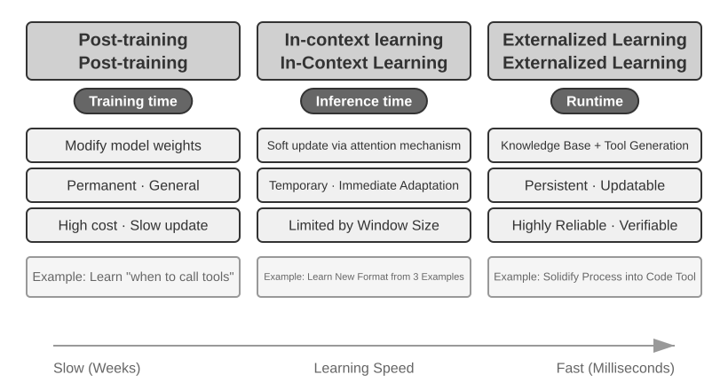
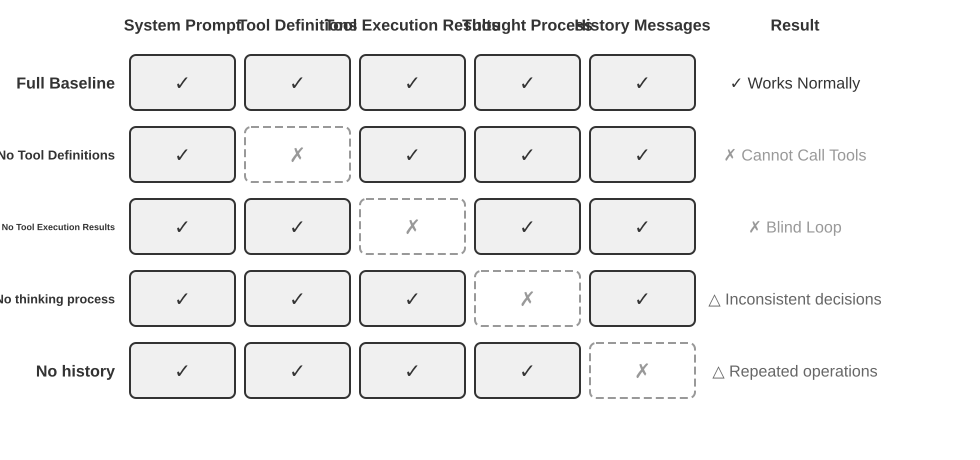
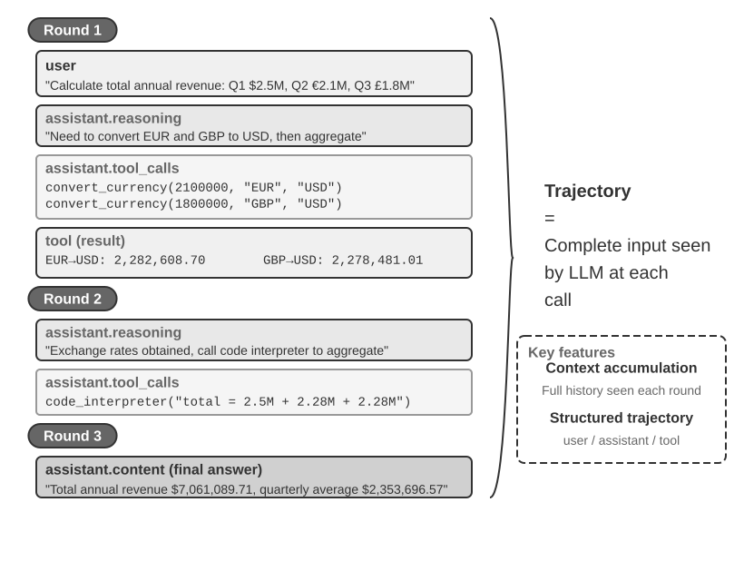
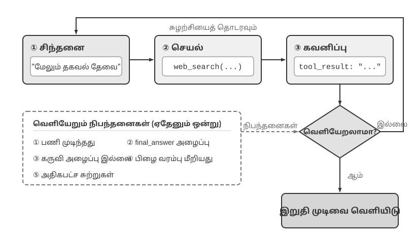

AI ஏஜெண்டுகளுடன் தொடங்குதல்¶
நீங்கள் Cursor ஐப் பயன்படுத்தி குறியீடு எழுதி, அது உங்கள் குறியீட்டுத் தளத்தைத் தேடி, பல கோப்புகளைத் திருத்தி, சோதனைகள் வெற்றியடையும் வரை இயக்குவதைப் பார்த்திருந்தால்; Deep Research ஐப் பயன்படுத்தி ஒரு தலைப்பை ஆராய்ந்து, அது மீண்டும் மீண்டும் தேடி, படித்து, ஒரு விரிவான அறிக்கையைத் தொகுப்பதைப் பார்த்திருந்தால்; Manus ஐப் பயன்படுத்தி ஒரு உலாவியைக் கட்டுப்படுத்தி, உங்களுக்காக ஆன்லைன் பணிகளை முடித்திருந்தால்; Doubao தொலைபேசி உதவியாளரிடம் டிக்கெட் முன்பதிவு செய்ய அல்லது உங்கள் தொலைபேசியில் செய்தி அனுப்பச் சொன்னால்; அல்லது Pine AI உங்கள் தொலைத்தொடர்பு வழங்குநரை அழைத்து குறைந்த கட்டணத்திற்கு பேச்சுவார்த்தை நடத்தியிருந்தால்—நீங்கள் ஏற்கனவே AI ஏஜெண்டுகளைப் பயன்படுத்தியிருக்கிறீர்கள்.
இந்த தயாரிப்புகள் பல்வேறு வடிவங்களில் வருகின்றன, ஆனால் அவை ஒரு பொதுவான பண்பைப் பகிர்ந்து கொள்கின்றன: அவை இனி "நீங்கள் கேட்கிறீர்கள், அது பதிலளிக்கிறது" என்ற செயலற்ற உரையாடல்கள் அல்ல. மாறாக, அவை தன்னாட்சியுடன் செயல்படுத்தும் படிகளைத் திட்டமிடக்கூடிய, பணிகளை முடிக்க பல்வேறு கருவிகளை அழைக்கக்கூடிய, மற்றும் முடிவுகளின் அடிப்படையில் தொடர்ந்து உத்திகளை சரிசெய்யக்கூடிய அறிவார்ந்த அமைப்புகளாகும். AI ஏஜெண்டுகள் கணினிகளுடன் நாம் தொடர்பு கொள்ளும் ஒரு புதிய வழியாக மாறி வருகின்றன.
இந்த அத்தியாயம் நடைமுறையிலிருந்து தொடங்கி, AI ஏஜெண்டின் மையக் கூறுகளை நோக்கி நகர்கிறது: நவீன ஏஜெண்டுகளால் என்ன செய்ய முடியும் என்பதை நேரடியாக அனுபவிப்போம், அவற்றின் பின்னணியில் உள்ள கட்டமைப்பைப் புரிந்துகொள்வோம், ஏஜெண்ட் அமைப்புகளை உருவாக்குவதற்கான வடிவமைப்பு முறைகளையும் சிறந்த நடைமுறைகளையும் கைவரப் பெறுவோம்.
வாசிப்பு குறிப்பு: இந்த அத்தியாயம் முழு புத்தகத்திற்குமான கருத்தியல் வரைபடமாக செயல்படுகிறது—இது ஏஜெண்டுகளின் முக்கிய சூத்திரம், செயல்பாட்டு சுழற்சி, பொறியியல் கட்டமைப்பு மற்றும் வடிவமைப்பு முறைகளை விரைவாக அறிமுகப்படுத்துகிறது, அடுத்தடுத்த அத்தியாயங்கள் கட்டியெழுப்பும் பொதுவான சொற்களஞ்சியத்தையும் குறிப்புப் புள்ளிகளையும் நிறுவுகிறது. முதல் வாசிப்பில் ஒவ்வொரு கருத்தையும் மனப்பாடம் செய்ய முயற்சிக்காதீர்கள்; மாறாக, முதலில் ஒரு பொதுவான பிம்பத்தை உருவாக்குங்கள். ஒவ்வொரு அடுத்தடுத்த அத்தியாயமும் இங்கு குறிப்பிடப்பட்ட ஒரு அம்சத்தை விரிவாக விளக்கும், மேலும் நீங்கள் எப்போதும் குறிப்புக்காக இந்த அத்தியாயத்திற்குத் திரும்பலாம்.
நவீன ஏஜெண்ட் = LLM + சூழல் + கருவிகள்¶
நவீன ஏஜெண்ட் அமைப்புகளின் சாரத்தை ஒரு சுருக்கமான சூத்திரத்துடன் வெளிப்படுத்தலாம்: ஏஜெண்ட் = LLM (பெரிய மொழி மாதிரி) + சூழல் + கருவிகள். இந்த சூத்திரம் எளிமையானது மற்றும் நடைமுறைக்குரியது, ஆனால் ஒவ்வொரு சொல்லையும் பரந்த அளவில் புரிந்துகொள்ள வேண்டும்:
- LLM என்பது ஏஜெண்டின் மூளை: இது வெறும் மாதிரி அளவுருக்களின் தொகுப்பு மட்டுமல்ல, மாறாக ஏஜெண்டின் முழு முடிவெடுக்கும் மையமாகும்—நோக்கத்தைப் புரிந்துகொள்வது, சிந்திப்பது, திட்டமிடுவது மற்றும் தீர்ப்புகளை வழங்குவது. மனித மூளை நியூரான்களின் தொகுப்பை விட அதிகமாக இருப்பது போல, அனுபவத்தால் வடிவமைக்கப்பட்ட சிந்தனை முறைகளை உள்ளடக்கியது, LLM இன் திறன்கள் இரண்டு பகுதிகளிலிருந்து வருகின்றன: முன்-பயிற்சி மூலம் திரட்டப்பட்ட உலக அறிவு மற்றும் மொழித் திறன்கள், மற்றும் பிந்தைய-பயிற்சி மூலம் உறுதிப்படுத்தப்பட்ட முடிவெடுக்கும் உத்திகள்—பிந்தையவற்றின் குறிப்பிட்ட நுட்பங்கள் (மேற்பார்வையிடப்பட்ட நுண்-சரிப்படுத்தல் மற்றும் வலுவூட்டல் கற்றல் போன்றவை) அத்தியாயம் 7 இல் விரிவாக விளக்கப்படும்.
- சூழல் (Context) என்பது ஏஜெண்டின் கண்கள்: இது மாதிரிக்கு உள்ளீடாக வழங்கப்படும் உரை மட்டுமல்ல, மாறாக ஒவ்வொரு முடிவெடுக்கும் புள்ளியிலும் ஏஜெண்டால் பார்க்க முடியும் அனைத்து தகவல்களும்—சுற்றுச்சூழல் தகவல், பயனர் நினைவகம், கள அறிவு, அதன் சொந்த நிலை மற்றும் பணி முன்னேற்றம். மனிதர்கள் முடிவெடுக்கும் போது தற்போதைய சூழ்நிலையைப் பார்க்கவும், தொடர்புடைய அனுபவங்களை நினைவுபடுத்தவும், குறிப்புப் பொருட்களை ஆலோசிக்கவும் வேண்டியிருப்பது போலவே, ஏஜெண்டின் சூழல் சாளரம் (context window) என்பது அந்த நேரத்தில் அது பார்க்கக்கூடிய அனைத்துமாகும்.
- கருவிகள் (Tools) என்பது ஏஜெண்டின் கைகளும் கால்களும்: அவை சில அழைக்கக்கூடிய API செயல்பாடுகள் மட்டுமல்ல, மாறாக ஏஜெண்டால் செய்யக்கூடிய அனைத்து விஷயங்களின் முழு தொகுப்பும்—முன் வரையறுக்கப்பட்ட கருவி அழைப்புகள் முதல் தேவைக்கேற்ப சிறப்புத் திறன்களை (Skills) ஏற்றுதல், புதிய திறன்களை உருவாக்க இயக்கவியல் முறையில் குறியீட்டை உருவாக்குதல் முதல் ஒத்துழைப்புக்காக துணை-ஏஜெண்டுகளுக்கு பணி ஒப்படைத்தல், பயனர்களுடன் முனைப்புடன் தொடர்புகொள்வது முதல் வெளிப்புற நிகழ்வுகளுக்கு பதிலளிப்பது வரை.
இதை மேலும் உள்ளுணர்வாகச் சொன்னால்: ஏஜெண்ட் = மூளை + கண்கள் + கைகளும் கால்களும். மூளை சிந்தனை மற்றும் முடிவெடுப்பதற்குப் பொறுப்பு, கண்கள் சிந்தனைக்குத் தேவையான அனைத்து தகவல்களையும் வழங்குகின்றன, மேலும் கைகளும் கால்களும் முடிவுகளை நிஜ உலக மாற்றங்களாக மொழிபெயர்க்கின்றன.
இந்த மூன்று கூறுகளும் RL இல் உள்ள மூன்று முக்கிய கருத்துக்களுடன் (அத்தியாயம் 7 ஐப் பார்க்கவும்) சரியாகப் பொருந்துகின்றன. பின்வரும் அட்டவணை விருப்ப வாசிப்பு—உங்களுக்கு RL பின்னணி இல்லையென்றால், அதைத் தவிர்க்கலாம்; இது உங்கள் புரிதலைப் பாதிக்காது. RL பின்னணி உள்ள வாசகர்கள் தங்கள் தற்போதைய அறிவை இந்தப் புத்தகத்தின் சொற்களஞ்சியத்துடன் இணைக்க உதவுவதற்காக மட்டுமே இது:
| உள்ளுணர்வு புரிதல் | செயலாக்கக் கூறு | கல்விசார் கருத்து (விருப்பம்) | பொருள் |
|---|---|---|---|
| மூளை | LLM | கொள்கை (Policy) | "அடுத்து என்ன செய்வது" என்பதைத் தீர்மானிக்கும் முடிவெடுக்கும் தர்க்கம்—தற்போதைய தகவலின் அடிப்படையில், கிடைக்கக்கூடிய அனைத்து விருப்பங்களிலிருந்தும் மிகவும் பொருத்தமான செயலைத் தேர்ந்தெடுக்கவும் |
| கண்கள் | சூழல் (Context) | கண்காணிப்பு இடம் (Observation Space) | ஏஜெண்டால் பார்க்கக்கூடிய அனைத்து தகவல்களும்—அது என்ன பார்க்க முடியும், படிக்க முடியும், நினைவில் கொள்ள முடியும், மற்றும் எந்த அமைப்புகளை அணுக முடியும் |
| கைகளும் கால்களும் | கருவிகள் (Tools) | செயல் இடம் (Action Space) | ஏஜெண்டால் செய்யக்கூடிய விஷயங்களின் முழுமையான தொகுப்பு—செய்தி அனுப்புதல் முதல் குறியீட்டை இயக்குதல் மற்றும் இடைமுகங்களைக் கட்டுப்படுத்துதல் வரை என்ன "வழிமுறைகள்" கிடைக்கின்றன |
கண்காணிப்பு இடமும் செயல் இடமும்: மாதிரிக்கும் உலகிற்கும் இடையிலான இடைமுகம்¶
Hennessy மற்றும் Patterson தங்கள் செவ்வியல் பாடநூலான Computer Architecture: A Quantitative Approach இன் முதல் அத்தியாயத்தை “What Is Computer Architecture?” என்ற கேள்வியுடன் தொடங்கி, அறிவுறுத்தல் தொகுப்பு கட்டமைப்பை (Instruction Set Architecture, ISA) மென்பொருளுக்கும் வன்பொருளுக்கும் இடையிலான இடைமுகமாக வரையறுக்கிறார்கள்1. இந்தப் பார்வை ஏஜெண்டுகளைப் புரிந்துகொள்வதற்கும் பயனுள்ளதாகும்: கண்காணிப்பு இடமும் செயல் இடமும் சேர்ந்து LLM-க்கும் அதன் வெளிப்புறச் சூழலுக்கும் இடையிலான இடைமுகத்தை உருவாக்குகின்றன. கண்காணிப்பு இடம், சூழலில் உள்ள தகவலை மாதிரி செயலாக்கக்கூடிய Context ஆக மாற்றுகிறது; செயல் இடம், மாதிரியின் முடிவுகளை வெளி உலகின் மீதான செயல்களாக மாற்றுகிறது. கண்காணிப்பு இடத்திற்குள் வராத தகவல் மாதிரிக்குப் பொருத்தவரை இல்லாததற்குச் சமம். செயல் இடத்தில் இல்லாத ஒரு செயல்பாட்டை, என்ன செய்ய வேண்டும் என்பது மாதிரிக்குத் தெளிவாகத் தெரிந்திருந்தாலும், அது வார்த்தைகளில் பரிந்துரைக்க மட்டுமே முடியும்.
எனவே, அடிப்படை மாதிரி மாறாமல் இருக்கும்போது ஏஜெண்டின் செயல்திறனை மேம்படுத்துவதற்கான முதன்மை அமைப்புப் பொறியியல் நெம்புகோல், அதன் கண்காணிப்பு மற்றும் செயல் இடங்களை மறுவரையறை செய்வது அல்லது விரிவுபடுத்துவதுதான். இந்தப் புத்தகத்தின் சொற்களில், இது Context மற்றும் Tools ஐ விரிவுபடுத்துவதாகும். “மேலும் புத்திசாலியான மாதிரி” தேவைப்படுவது போலத் தோன்றும் பல சிக்கல்கள் உண்மையில் இடைமுகச் சிக்கல்களே: பணிக்குத் தேவையான தரவை Context இல் கொண்டு வருங்கள் அல்லது தேவையான செயல்பாட்டை ஒரு Tool ஆக வழங்குங்கள்; முன்பு தீர்க்க முடியாத பணி, மாதிரியை மறுபயிற்சி செய்யாமலேயே தீர்க்கக்கூடியதாக மாறலாம்.
Manus: முன்பு தனித்திருந்த இடங்களை ஒன்றிணைத்தல். Manus தோன்றுவதற்கு முன், உற்பத்தியில் பயன்படுத்தப்பட்ட ஏஜெண்டுகள் பெரும்பாலும் Deep Research, Coding, Computer Use என்ற மூன்று தனித்த பாதைகளில் வளர்ந்தன. இந்த மூன்றையும் ஒரே அமைப்பில் இணைத்த பரவலான தாக்கம் கொண்ட முதல் உற்பத்தி ஏஜெண்ட் Manus ஆகும். இணையம் அதன் கண்காணிப்பு இடத்தை விரிவுபடுத்தியது; கோப்பு முறைமையும் குறியீடு செயலாக்கமும் அதன் செயல் இடத்தை விரிவுபடுத்தின; திரை உணர்தலுடன் கிளிக் மற்றும் உள்ளீடு ஆகியவை வரைகலை இடைமுகங்களை இரு இடங்களிலும் சேர்த்தன. Manus வெறும் வலிமையான மாதிரியை மாற்றியதால் பொது நோக்க ஏஜெண்டாகவில்லை. மூன்று வகை ஏஜெண்டுகளின் கண்காணிப்பு மற்றும் செயல் இடங்களின் ஒன்றியத்தை எடுத்ததன் மூலம், ஒரே ஏஜெண்ட் முந்தைய தயாரிப்பு எல்லைகளைக் கடந்து பணிகளை முடிக்க முடிந்தது.
OpenClaw: இடைமுகத்தை பயனரின் டிஜிட்டல் வாழ்க்கைக்குள் விரிவுபடுத்துதல். OpenClaw இரு இடங்களையும் மேலும் வெளிப்புறமாக விரிவுபடுத்துகிறது. WhatsApp, Telegram, Slack, Discord, iMessage மற்றும் பல பயனர்கள் ஏற்கனவே பயன்படுத்தும் செய்தி வழிகளின் மூலம் பணிகளைப் பெற்று முடிவுகளைத் திருப்புவதால், ஏஜெண்டை ஏறக்குறைய எங்கிருந்தும் அணுகலாம். அதன் local-first Gateway, அனுமதிக்கப்பட்ட Tools, plugins மற்றும் Skills உடன் சேர்ந்து Google Drive, Notion போன்ற cloud பயன்பாடுகளையும் உள்ளூர் கோப்பு முறைமையையும் இணைக்க முடியும். இதனால் பல கணக்குகள் மற்றும் சாதனங்களில் சிதறியுள்ள டிஜிட்டல் கோப்புகள், பயனரின் வெளிப்படையான அனுமதியுடன், ஒரே ஏஜெண்டின் கண்காணிப்பு இடத்திற்குள் வந்து அதன் Tools மூலம் செயலாக்கப்படலாம். கோப்புகளைப் பதிவேற்றவோ தனி connector ஐ அமைக்கவோ வேண்டியிருந்த, தனிமைப்படுத்தப்பட்ட cloud sandbox ஐ மையமாகக் கொண்ட ஆரம்பகால Manus உடன் ஒப்பிடும்போது, local-first OpenClaw பரந்த தரவு எல்லையைக் கடக்கிறது. பின்னர் Manus தனது சொந்த Google Drive connector மற்றும் உள்ளூர் கோப்புகளுக்கான desktop அணுகலைச் சேர்த்தது—தயாரிப்பு வளர்ச்சி என்பது பல நேரங்களில் கண்காணிப்பு மற்றும் செயல் இடங்களின் விரிவாக்கமே என்ற கருத்தை இது மேலும் உறுதிப்படுத்துகிறது2.
இடங்களை விரிவுபடுத்துவது என்பது கிடைக்கும் எல்லா தகவல்களையும் Tools ஐயும் ஒரே நேரத்தில் மாதிரிக்குள் கொட்டுவது அல்ல. தொடர்பற்ற Context இரைச்சலை உருவாக்குகிறது; அளவுக்கு அதிகமான Tools தேர்வுச் செலவையும் பாதுகாப்பு அபாயத்தையும் அதிகரிக்கின்றன. பயனுள்ள விரிவாக்கம் தேவைக்கேற்ப, தொடர்புடையதாக, கட்டுப்படுத்தக்கூடியதாக இருக்க வேண்டும்: retrieval சரியான தகவலை Context இல் வைக்க வேண்டும்; Tool discovery தற்போது தேவைப்படும் செயல்களை மட்டுமே வெளிப்படுத்த வேண்டும்; அனுமதிகளும் முடிவு சரிபார்ப்பும் அந்தச் செயல்களைக் கட்டுப்படுத்த வேண்டும். அடுத்த அத்தியாயங்கள் இந்தப் பொறியியல் நுட்பங்களைத் தனித்தனியாக விரிவாக விளக்கும்.
இந்த மூன்று கூறுகளின் பாத்திரங்களையும் அவற்றுக்கிடையேயான உறவுகளையும் புரிந்துகொள்வது பயனுள்ள ஏஜெண்ட் அமைப்புகளை உருவாக்குவதற்கான அடித்தளமாகும். மிகவும் உறுதியான கூறான கருவிகள் (கைகளும் கால்களும்) மூலம் தொடங்கி, படிப்படியாக மூளை (LLM) மற்றும் கண்கள் (சூழல்) பற்றி ஆழமாகப் பார்ப்போம். வெவ்வேறு வகையான ஏஜெண்டுகள் இந்த மூன்று பரிமாணங்களிலும் எவ்வாறு செயல்படுகின்றன என்பதை முதலில் பார்ப்போம்:
| ஏஜெண்ட் தயாரிப்பு | கண்கள் (உணர்தல்) | கைகளும் கால்களும் (செயல்) | உத்தி |
|---|---|---|---|
| குறியீட்டு ஏஜெண்டுகள் (எ.கா., Cursor) | தேவை ஆவணங்கள், குறியீட்டுத் தளம், டெர்மினல் சூழல் | திறந்த-முடிவு (உள் பகுத்தறிவு, குறியீடு தேடல், கோப்பு படிப்பு/எழுதுதல், கட்டளை செயல்படுத்துதல் போன்றவை) | அதிகரிப்பு மேம்பாடு: தேவைகளைப் புரிந்துகொள் → தொடர்புடைய குறியீட்டைத் தேடு → குறியீட்டைத் திருத்து → சோதனை செய்து சரிபார் → பிழைதிருத்தம் செய்து சரிசெய் |
| தேடல் ஏஜெண்டுகள் (எ.கா., Deep Research) | இணைய வளங்கள், கல்வித் தரவுத்தளங்கள், உள்ளூர் கோப்புகள் | திறந்த-முடிவு (உள் பகுத்தறிவு, தேடல் வினவல்கள், இணைய வாசிப்பு, சுருக்க உருவாக்கம்) | மீள்செயல் ஆழமாக்கல்: இருக்கும் தகவலின் அடிப்படையில் தேடல் திசையை சரிசெய்தல், படிப்படியாக ஒரு முழுமையான அறிக்கையை தொகுத்தல் |
| கணினி கட்டுப்பாட்டு ஏஜெண்டுகள் (எ.கா., Browser Use) | கணினித் திரை, உலாவி பக்கங்கள், கோப்பு முறைமை | திறந்த-முடிவு (உள் பகுத்தறிவு, கிளிக் செய்தல், தட்டச்சு செய்தல், ஸ்க்ரோல் செய்தல், ஸ்கிரீன்ஷாட்கள், குறியீடு செயலாக்கம் போன்றவை) | காட்சி உணர்தல் + செயல்பாடு: திரையை கவனித்தல் → இலக்கு உறுப்புகளை அடையாளம் காணல் → செயல்களைச் செய்தல் → முடிவுகளை சரிபார்த்தல் |
| தொலைபேசி உதவியாளர் ஏஜெண்டுகள் (எ.கா., Doubao) | தொலைபேசித் திரை, நிறுவப்பட்ட பயன்பாடுகள் | திறந்த-முடிவு (உள் பகுத்தறிவு, கிளிக் செய்தல், ஸ்வைப் செய்தல், தட்டச்சு செய்தல், பயன்பாடுகளைத் திறத்தல் போன்றவை) | நோக்கம் புரிதல் + பயன்பாட்டுக் கட்டுப்பாடு: பயனர் தேவைகளைப் புரிதல் → இலக்கு பயன்பாட்டைக் கண்டறிதல் → செயல்களைச் செய்தல் → நிறைவை உறுதிப்படுத்தல் |
| தனிப்பட்ட பணி ஏஜெண்டுகள் (எ.கா., Pine AI) | பயனர் கணக்குத் தகவல், வரலாற்று பில்கள், சேவை வழங்குநர் அறிவுத் தளம் | திறந்த-முடிவு (உள் பகுத்தறிவு, அழைப்புகள் செய்தல், மின்னஞ்சல்கள் அனுப்புதல், படிவங்களை நிரப்புதல், பயனருடன் உறுதிப்படுத்துதல்) | பல-படி பணி செயலாக்கம்: தகவல் சேகரிப்பு → பேச்சுவார்த்தை உத்தி உருவாக்கம் → சேவை வழங்குநரை தொடர்பு கொள்ளல் → பேச்சுவார்த்தை → முடிவுகளை அறிவித்தல் |
இந்த ஏஜெண்ட் அமைப்புகள் மூன்று பொதுவான அம்சங்களைப் பகிர்ந்து கொள்கின்றன: அவை அனைத்தும் திறந்த-முடிவு செயல் இடைவெளிகளைப் பயன்படுத்துகின்றன—வரையறுக்கப்பட்ட பொத்தான்களின் தொகுப்பிலிருந்து தேர்ந்தெடுப்பதற்குப் பதிலாக, தன்னிச்சையான இயற்கை மொழி மற்றும் குறியீட்டை உருவாக்குகின்றன; அவை அனைத்தும் உள்ளார்ந்த சிந்தனை செய்ய முடியும்—செயல்படுவதற்கு முன் திட்டமிடல் மற்றும் பகுத்தறிவு; மேலும் அவை அனைத்தும் தொடர்ச்சியாக தொடர்பு கொள்ள முடியும்—சுற்றுச்சூழல் பின்னூட்டத்தின் அடிப்படையில் உத்திகளை சரிசெய்தல். இந்தத் திறன்கள் துல்லியமாக மூளை, கண்கள், கைகளும் கால்களும் ஆகியவற்றின் கூட்டியக்கத்திலிருந்து வருகின்றன—அதாவது, LLM, சூழல் மற்றும் கருவிகள்.
கருவிகள்: ஏஜெண்டின் கைகளும் கால்களும்¶
கருவிகள் ஏஜெண்டை வெளி உலகத்துடன் இணைக்கும் பாலம். மனிதனின் கைகளும் கால்களும் போல, அவை ஏஜெண்டை ஒரு செயலற்ற பார்வையாளரிடமிருந்து செயல்படும் செயற்பாட்டாளராக மாற்றுகின்றன. கருவிகள் இல்லாமல் ஏஜெண்ட் வெறும் பேச்சோடு நின்றுவிடும்; கருவிகளுடன் அது உண்மையாகவே உலகை மாற்ற முடியும்.
கருவிகளை முறையாக விவாதிக்க, ஏஜெண்ட் வெளி உலகத்துடன் தொடர்பு கொள்ளும் திசையின் அடிப்படையில் அவற்றை ஐந்து வகைகளாகப் பிரிக்கலாம். இப்போதைக்கு, ஒவ்வொரு வகையின் பிரதிநிதித்துவ சூழ்நிலைகளை விரைவாகப் பார்த்து ஒரு பொதுவான பிம்பத்தை உருவாக்கினால் போதும்; அடுத்தடுத்த அத்தியாயங்கள் ஒவ்வொன்றையும் விரிவாக விளக்கும்.
உணர்தல் கருவிகள் ஏஜெண்ட் தகவலை அணுக அனுமதிக்கின்றன: தேடுபொறிகள் நிகழ்நேர இணையத் தரவை வழங்குகின்றன, கோப்பு முறைமைகள் உள்ளூர் ஆவணங்களைப் படிக்கின்றன, மேலும் APIகள் மற்றும் தரவுத்தளங்கள் வெளிப்புற சேவைகள் மற்றும் நிறுவன மையத் தரவுகளுடன் இணைகின்றன.
செயலாக்க கருவிகள் ஏஜெண்ட் உலகத்தை மாற்ற அனுமதிக்கின்றன: குறியீடு செயலாக்கம், கோப்பு செயல்பாடுகள், கணினி கட்டளைகள், வெளிப்புற API அழைப்புகள்—முடிவுகள் இவ்வாறு உறுதியான செயல்களாக மாற்றப்படுகின்றன.
ஒத்துழைப்பு கருவிகள் ஏஜெண்ட் மற்ற ஏஜெண்டுகளுடன் ஒத்துழைக்க அனுமதிக்கின்றன: சிறப்புப் பணிகளுக்காக துணை ஏஜெண்டுகளை நியமித்தல், முக்கிய முடிவு புள்ளிகளில் மனித உறுதிப்படுத்தலைக் கோருதல், அல்லது பல-ஏஜெண்ட் அமைப்புகளில் செயல்களை ஒருங்கிணைத்தல்.
நிகழ்வுத் தூண்டுதல் கருவிகள் (Event Trigger Tools) முதல் மூன்று வகைகளில் இருந்து அடிப்படையில் வேறுபடுகின்றன—அவை ஏஜெண்டால் (Agent) செயல்படுத்தப்படுவதில்லை, மாறாக ஏஜெண்டை ஒரு பணியைத் தொடங்கத் தூண்டும் வெளிப்புற உள்ளீடுகளாகச் செயல்படுகின்றன. உதாரணமாக, ஒரு புதிய மின்னஞ்சலைப் பெறுதல், திட்டமிடப்பட்ட நேரத்தை அடைதல் அல்லது மற்றொரு அமைப்பிலிருந்து வெப்ஹூக் (Webhook) அழைப்பைப் பெறுதல்—இந்த நிகழ்வுகள் ஏஜெண்டைச் செயல்படுத்தி, அடுத்தடுத்த சிந்தனை மற்றும் செயல்பாட்டைத் தொடங்கத் தூண்டுகின்றன. நிகழ்வுத் தூண்டுதல்கள் ஏஜெண்டால் செயல்படுத்தப்படாவிட்டாலும், ஏஜெண்ட் வெளி உலகத்துடன் தொடர்பு கொள்வதற்கான வழிகளில் ஒன்றாகும், எனவே அவை பரந்த கருவி அமைப்பில் சேர்க்கப்படுகின்றன.
பயனர் தொடர்பு கருவிகள் (User Communication Tools) என்பது ஏஜெண்ட் பயனருடன் இணைந்து தகவலைத் தெரிவிப்பதற்கான வழிகளாகும். வெளி உலகத்தை மாற்றும் செயலாக்க கருவிகளைப் போலல்லாமல், பயனர் தொடர்பு கருவிகள் தகவல் பரிமாற்றம் மற்றும் இடைவினையில் கவனம் செலுத்துகின்றன—உரைச் செய்திகள், குரல் அழைப்புகள், மின்னஞ்சல்கள் போன்றவற்றின் மூலம் ஏஜெண்டின் செயலாக்க முன்னேற்றம் அல்லது முன்னெச்சரிக்கை கவனிப்பைப் பயனருக்குத் தெரிவிக்கின்றன.
மேற்கண்ட ஐந்து வகை கருவிகளுக்கான முழுமையான வகைப்பாடு அமைப்பு மற்றும் வடிவமைப்புக் கொள்கைகள் அத்தியாயம் 4 இல் விவாதிக்கப்படும். கருவி வடிவமைப்பின் தரம் நேரடியாக ஒரு ஏஜெண்ட் எவ்வளவு தூரம் செல்ல முடியும் என்பதைத் தீர்மானிக்கிறது—இடைமுக வரையறைகள் தெளிவாக இல்லாவிட்டால், மாதிரி கருவிகளை தவறாகப் பயன்படுத்தும்; பிழை கையாளுதல் போதுமானதாக இல்லாவிட்டால், கருவி தோல்வி ஏஜெண்டிற்கு ஒரு முட்டுக்கட்டையாக மாறும்; அனுமதிக் கட்டுப்பாடுகள் மிகவும் விரிவானதாக இருந்தால், ஏஜெண்ட் பிழையின் விளைவுகள் சரிசெய்ய முடியாததாக இருக்கும். MCP (Model Context Protocol) தரநிலையின் ஊக்குவிப்பு கருவி ஒருங்கிணைப்பை பிளக்-இன்களை நிறுவுவது போல எளிதாக்குகிறது—சுற்றுச்சூழல் அமைப்பு வேகமாக விரிவடைந்து வருகிறது, ஆனால் வடிவமைப்புக் கொள்கைகள் காலத்தால் அழியாதவையாக உள்ளன.
கருவி அழைப்பு (Tool Calling) (செயல்பாட்டு அழைப்பு (Function Calling) என்றும் அழைக்கப்படுகிறது) நவீன LLM ஏஜெண்டுகளின் மைய திறனாகும், இது மாதிரியை கட்டமைக்கப்பட்ட முறையில் வெளிப்புற கருவிகளை அழைக்க அனுமதிக்கிறது. இந்த திறன் LLM ஐ ஒரு தூய உரை உருவாக்கியிலிருந்து உண்மையான செயல்பாடுகளைச் செய்யக்கூடிய ஒரு அறிவார்ந்த அமைப்பாக மாற்றுகிறது. இந்த புத்தகம் முழுவதும் "கருவி அழைப்பு" என்ற சொல்லைப் பயன்படுத்தும்.
கருவி அழைப்பு செயல்முறை நான்கு படிகளைக் கொண்டுள்ளது: முதலில், சூழலில் (context) மாதிரிக்கு எந்தெந்த கருவிகள் கிடைக்கின்றன (அவற்றின் பெயர்கள், நோக்கங்கள் மற்றும் அளவுருக்கள் உட்பட) என்பதைத் தெரிவிக்கவும்; பின்னர், மாதிரி தானாகவே ஒரு கருவியை அழைக்கலாமா, எந்த கருவியை அழைக்க வேண்டும், என்ன அளவுருக்களை அனுப்ப வேண்டும் என்பதை முடிவு செய்கிறது; அடுத்து, கருவி செயல்பட்ட பிறகு, முடிவு சூழலில் இணைக்கப்படுகிறது; இறுதியாக, மாதிரி முடிவின் அடிப்படையில் அடுத்த செயலை முடிவு செய்கிறது. இந்த சுழற்சி பின்னர் அறிமுகப்படுத்தப்படும் ReAct இன் அடித்தளமாகும்.
வானிலை வினவல் காட்சியை உதாரணமாக எடுத்துக் கொண்டால், API மட்டத்தில் நான்கு-படி செயல்முறையின் எளிமைப்படுத்தப்பட்ட பிரதிநிதித்துவம் பின்வருமாறு:
Step 1: Declare tools Step 2: Model decides to call
tools: [{ assistant: {
name: "get_weather", tool_calls: [{
parameters: { function: "get_weather",
city: "string" arguments: {city: "Beijing"}
} }]
}] }
படி 3: முடிவு சூழலுடன் இணைக்கப்பட்டது படி 4: முடிவின் அடிப்படையில் மாதிரி பதிலளிக்கிறது
tool: { assistant: {
tool_call_id: "call_1", content: "இன்று பெய்ஜிங்கில்: 28°C, வெயில்."
content: '{"temp":28,"sky":"clear"}' }}
டெவலப்பர்கள் கருவிகளை வரையறுத்து, கருவி அழைப்புகளை இயக்குவது மட்டுமே தேவை; "அழைக்க வேண்டுமா, எதை அழைக்க வேண்டும், என்ன அளவுருக்களை அனுப்ப வேண்டும்" என்ற முடிவை மாதிரி தானாகவே முழுமையாக்குகிறது. அத்தியாயம் 2 இந்த API கட்டமைப்பை விரிவாக விளக்கும்.
ஒரு ஏஜெண்டிற்கான கருவிகளை வடிவமைக்கும்போது, பணிக்குத் தேவையான மிகக் குறுகிய திறனிலிருந்து தொடங்கி, பணியின் சிக்கல்தன்மை அதிகரிக்கும்போது படிப்படியாக விரிவாக்கலாம். பணி அடிப்படை எண்கணிதச் செயல்களை மட்டும் கொண்டிருந்தால், தெளிவான அளவுருக்களைக் கொண்ட ஒரு கால்குலேட்டர் போதும்; பணி விரிதாள்களைப் படித்தல், விடுபட்ட மதிப்புகளைச் சுத்திகரித்தல், புள்ளிவிவரங்களைக் கணக்கிடுதல், வரைபடங்களை உருவாக்குதல் என்று விரிவடையும்போது, மேலும் மேலும் சிறப்புக் கருவிகளைச் சேர்ப்பதைவிடக் கட்டுப்படுத்தப்பட்ட Python code interpreter-ஐ இணைத்துப் பயன்படுத்துவதும் ஆராய்வதும் எளிதாக இருக்கும். ஆனால் பொதுப்பயன்பாட்டுத் தன்மை பிழைகளுக்கான வாய்ப்பையும் தாக்குதல் பரப்பையும் அதிகரிக்கிறது: குறியீடு தனிமைப்படுத்தப்பட்ட மணல் பெட்டியில் இயக்கப்பட வேண்டும், இயல்பாகப் பிணைய அணுகல் மறுக்கப்பட வேண்டும், மேலும் அங்கீகரிக்கப்பட்ட பணிக் கோப்பகத்திற்கு வெளியேயுள்ள கோப்புகளைப் படிக்க அனுமதிக்கக் கூடாது; செயலாக்க நேரம், CPU, நினைவகம், வெளியீட்டு அளவு ஆகியவற்றிற்கும் வரம்புகள் அமைக்கப்பட வேண்டும்.
இதேபோல், ஒற்றைப் பதிவுக் கருவி ஒரு செயலாக்கத்தின் நிகழ்வுகளைப் பதிவு செய்ய ஏற்றது; பல மணிநேரங்கள் அல்லது நாட்கள் நீளும் பணிகளுக்கு, கட்டுப்படுத்தப்பட்ட மெய்நிகர் பணிக் கோப்பகம் திட்டம், இடைநிலை முடிவுகள், செயலாக்கப் பதிவுகள், இறுதி வெளியீடுகள் ஆகியவற்றை ஒன்றாகச் சேமித்து, ஏஜெண்ட் பல செயலாக்கங்களுக்கு இடையில் பணியைத் தொடர உதவும். அந்தக் கோப்பகம் படிக்கவும் எழுதவும் அனுமதிக்கப்பட்ட பாதைகள், சேமிப்புத் திறன், கோப்பு வகைகள் ஆகியவற்றை வரம்பிடுவதோடு பாதை மீறலையும் தடுக்க வேண்டும்; முழு ஹோஸ்ட் கோப்பு முறைமையையும் ஏஜெண்டிற்கு வெளிப்படுத்தக் கூடாது.
பொது-நோக்கக் கருவிகள் எப்போதும் சிறப்புக் கருவிகளைவிட மேம்பட்டவை அல்ல. பணம் செலுத்துதல், தரவை நீக்குதல், மின்னஞ்சல் அனுப்புதல், உற்பத்திச் சூழலில் வெளியிடுதல் போன்ற உயர் ஆபத்துள்ள அல்லது கடுமையான வணிகக் கட்டுப்பாடுகளுக்குட்பட்ட செயல்பாடுகள், தெளிவான அளவுருக்கள், வரையறுக்கப்பட்ட அனுமதிகள், முழுமையான தணிக்கைத்தன்மை ஆகியவற்றைக் கொண்ட சிறப்புக் கருவிகளாகவே தொகுக்கப்பட வேண்டும்; தேவைப்பட்டால் முன்தோற்றம் மற்றும் மனித உறுதிப்படுத்தலையும் சேர்க்கலாம். எனவே, கருவி வடிவமைப்பின் மையக் கோட்பாடு: பொது அடிப்படைத் திறன்கள் இணைத்தல் மற்றும் ஆராய்தலுக்குப் பயன்படுகின்றன; சிறப்புக் கருவிகள் உயர் ஆபத்துள்ள செயல்பாடுகளையும் கடுமையான வணிக விதிகளையும் கட்டுப்படுத்தப் பயன்படுகின்றன.
LLM: ஏஜெண்டின் மூளை¶
பெரிய மொழி மாதிரி (LLM) ஏஜெண்டின் முடிவெடுக்கும் மையமாகும். பயனர் கோரிக்கையைப் பெற்றவுடன், அது முதலில் உண்மையான நோக்கத்தைப் புரிந்துகொள்ள வேண்டும் (பயனர் சொல்வது பெரும்பாலும் அவர்கள் உண்மையில் விரும்புவதாக இருக்காது), பின்னர் தெளிவற்ற அல்லது சிக்கலான பணிகளை செயல்படுத்தக்கூடிய படிகளாகப் பிரிக்க வேண்டும். செயல்பாட்டின் போது, அது தொடர்ந்து தீர்ப்புகளை வழங்க வேண்டும்: அடுத்து என்ன செய்வது, ஒரு கருவியை அழைக்க வேண்டுமா, எந்த கருவியை அழைக்க வேண்டும், என்ன அளவுருக்களை அனுப்ப வேண்டும். இந்த "புரிந்துகொள்-திட்டமிடு-செயல்படுத்து" திறன், முன்-பயிற்சியின் போது திரட்டப்பட்ட அறிவிலிருந்து வருகிறது, மேலும் இது பணிப்பாய்வுகள் மற்றும் தன்னாட்சி ஏஜெண்டுகள் இரண்டும் சார்ந்திருக்கும் அடித்தளமாகும்.
LLM ஏஜெண்டுகளின் ஒரு தனித்துவமான திறன் உள் பகுத்தறிவு ஆகும்—உண்மையான செயலை எடுப்பதற்கு முன், ஏஜெண்டால் திட்டமிட்டு பகுத்தறிய முடியும். இந்த செயல்முறை வெளிப்புற சூழலை மாற்றாது, ஆனால் அடுத்தடுத்த செயல்களின் தரத்தை கணிசமாக மேம்படுத்த முடியும். LLM கள் பயனுள்ள உள் பகுத்தறிவைச் செய்ய முடிவதற்குக் காரணம், முன்-பயிற்சி கட்டத்தில் (பாரிய இணைய உரையில் ஆரம்ப பயிற்சி, மாதிரி மொழி வடிவங்கள் மற்றும் உலக அறிவைக் கற்க அனுமதிக்கிறது) பெறப்பட்ட திறன்கள் ஆகும்—மாதிரி பின்பற்றும் பகுத்தறிவு, மனித அறிவில் ஏற்கனவே பதிந்துள்ள தர்க்க விதிகளை அடிப்படையாகக் கொண்டது, இதில் கணித விதிகள், காரண-விளைவு உறவுகள், சிக்கல் பகுப்பாய்வு உத்திகள் போன்றவை அடங்கும். எனவே, ஏஜெண்டின் பகுத்தறிவு கண்மூடித்தனமான முயற்சி-தவறல் அல்ல; அது ஒரு கட்டமைக்கப்பட்ட அறிவுத் தளத்தின் மீது விரிவடைகிறது.
இந்த கட்டமைக்கப்பட்ட பகுத்தறிவு திறன், LLM ஏஜெண்டுகளை புதிய பணிகளை நேரடியாகக் கையாள அனுமதிக்கிறது—இது பூஜ்ஜிய-ஷாட் மற்றும் சில-ஷாட் கருத்துகள் மூலம் கீழே விளக்கப்பட்டுள்ளது. இந்த திறனின் நேரடி வெளிப்பாடு பூஜ்ஜிய-ஷாட் பொதுமைப்படுத்தல் ஆகும்: முன்பு பார்த்திராத ஒரு பணியை எதிர்கொண்டாலும், LLM ஏஜெண்டால் எந்த உதாரணமும் இல்லாமல், இருக்கும் அறிவை இணைத்து அதைக் கையாள முடியும். உதாரணமாக, குவாண்டம் இயற்பியல் பற்றி ஒரு கவிதை எழுத நீங்கள் அதற்கு ஒருபோதும் கற்பிக்கவில்லை, ஆனால் அது அதன் இருக்கும் மொழி மற்றும் இயற்பியல் அறிவின் அடிப்படையில் ஒரு நல்ல கவிதையை உருவாக்க முடியும்.
மேலும், LLM ஏஜெண்டுகள் சில எடுத்துக்காட்டுகளுடன் சில-ஷாட் தழுவலை (Few-shot Adaptation) அடைய முடியும்—ப்ராம்ப்ட்டில் இரண்டு அல்லது மூன்று விளக்க எடுத்துக்காட்டுகளை வழங்குவதன் மூலம், மாதிரியானது ஒரு புதிய பணி முறையைக் கற்றுக்கொள்ள முடியும். உதாரணமாக, சில "பயனர் கருத்து -> உணர்வு லேபிள்" எடுத்துக்காட்டுகளைக் காண்பிப்பதன் மூலம், புதிய கருத்துகளுக்கான உணர்வு வகைப்பாட்டைக் கற்றுக்கொள்ள முடியும். எளிமையாகச் சொன்னால், பூஜ்ஜிய-ஷாட் (zero-shot) என்பது "எடுத்துக்காட்டுகள் இல்லாமல் செய்ய முடியும்" என்பதையும், சில-ஷாட் (few-shot) என்பது "சில எடுத்துக்காட்டுகளைப் பார்த்த பிறகு கற்றுக்கொள்ள முடியும்" என்பதையும் குறிக்கிறது.
மாதிரியே ஏஜெண்டாக: மாதிரியே தயாரிப்பாக மாறும்போது¶
"மாதிரியே ஏஜெண்டாக" (Model as Agent) முன்னுதாரணம், AI ஏஜெண்ட் மேம்பாட்டின் சமீபத்திய திசையைக் குறிக்கிறது. மேம்பட்ட மாதிரிகள், பிந்தைய-பயிற்சி (post-training) (குறிப்பாக வலுவூட்டல் கற்றல்) மூலம், கருவி அழைப்புத் திறன்களை (tool calling capabilities) உள்ளார்ந்த திறன்களாக உள்வாங்கிக் கொள்கின்றன: எப்போது ஒரு கருவியை அழைக்க வேண்டும், எந்த கருவியை அழைக்க வேண்டும், என்ன அளவுருக்களை அனுப்ப வேண்டும் என்பதை மாதிரியே முடிவு செய்கிறது, கைமுறை ஒருங்கிணைப்பு இல்லாமல். இருப்பினும், இது கட்டமைப்பு அடுக்கு (framework layer) குறைவான முக்கியத்துவம் வாய்ந்ததாக மாறுகிறது என்று அர்த்தமல்ல. மாறாக, மாதிரி எவ்வளவு சக்தி வாய்ந்ததோ, அதைச் சுற்றி கட்டப்பட்ட ஹார்னஸ் (Harness) அவ்வளவு முக்கியமானதாகிறது. ஹார்னஸ் என்ற சொல் முதலில் குதிரையின் மீது வைக்கப்படும் கியர்—கடிவாளம் மற்றும் சேணம்—என்பதைக் குறிக்கிறது, குதிரையின் ஓடும் திறனைக் கட்டுப்படுத்த அல்ல, மாறாக அந்த சக்தியை சரியான திசையில் வழிநடத்த. ஏஜெண்டின் சூழலில், மாதிரி என்பது சக்தி வாய்ந்த ஆனால் கணிக்க முடியாத குதிரை, மற்றும் ஹார்னஸ் என்பது அதன் திறன்களை நம்பகமான பணி செயல்பாட்டிற்கு திசைதிருப்பும் பொறியியல் உறை (engineering shell). இதை நீங்கள் ஒரு பந்தய கார் ஓட்டுநரைச் சுற்றியுள்ள முழு ஆதரவு அமைப்பாகவும் நினைக்கலாம்: சீட் பெல்ட், டிராக் தடுப்புகள், பிட் க்ரூ. ஓட்டுநர் (மாதிரி) எவ்வளவு வேகமானவரோ, இந்த அமைப்பு அவ்வளவு முக்கியமானதாகிறது. ஒரு ஏஜெண்டில், ஹார்னஸ் என்பது சூழல் மேலாண்மை (context management), கருவி இடைமுகங்கள் (tool interfaces), பாதுகாப்பு கட்டுப்பாடுகள் (safety constraints), மற்றும் சரிபார்ப்பு மற்றும் திருத்த வழிமுறைகள் (verification and correction mechanisms) போன்ற உள்கட்டமைப்பை உள்ளடக்கியது (இந்த அத்தியாயத்தின் இறுதிப் பகுதியைப் பார்க்கவும்).
மாதிரியின் தன்னாட்சி முடிவெடுக்கும் இடம் (autonomous decision-making space) எவ்வளவு பெரியதோ, பிழைகளின் சாத்தியமான தாக்கமும் அவ்வளவு பெரியதாக இருக்கும், எனவே நம்பகத்தன்மையை உறுதிப்படுத்த மிகவும் நுட்பமான கட்டுப்பாடுகள், சரிபார்ப்பு மற்றும் திருத்த வழிமுறைகள் தேவைப்படுகின்றன. மாதிரி விற்பனையாளர்களின் (model vendors) உண்மையான நன்மை "கட்டமைப்பை மெல்லியதாக்குவது" அல்ல, மாறாக மாதிரி மற்றும் அதைச் சுற்றியுள்ள ஹார்னஸை இணைத்து மேம்படுத்தி (co-optimize), தொடர்ச்சியாக மீண்டும் செயல்படுத்த முடிவதாகும்.
ஆனால் இங்கே ஒரு ஆழமான கேள்வி நிலுவையில் உள்ளது: மாதிரிகள் தொடர்ந்து வலுப்பெறுமென்றால், இன்றைய Harness இறுதியில் மாதிரியால் “விழுங்கப்பட்டுவிடுமா”? Rich Sutton தனது “கசப்பான பாடம்” (The Bitter Lesson) என்ற கட்டுரையில், AI ஆராய்ச்சியின் எழுபது ஆண்டுகளில் மீண்டும் மீண்டும் நிகழ்ந்த ஒரு காட்சியைத் திரும்பிப் பார்க்கிறார்3: ஆராய்ச்சியாளர்கள் தங்கள் துறைசார் புரிதலை மீண்டும் மீண்டும் அமைப்புக்குள் குறியீடாக்குகின்றனர்; அது குறுகிய காலத்தில் பலன் தருகிறது, ஆனால் நீண்ட காலத்தில் கணக்கீடு மற்றும் தரவின் அளவுடன் தொடர்ந்து விரிவடையக்கூடிய பொதுவான முறைகளான தேடல் மற்றும் கற்றலிடம் எப்போதும் தோற்கிறது. இதன் அடிப்படையில் அளவிட்டால், Harness-இல் உள்ள கட்டுப்பாடுகள், சரிபார்ப்பு மற்றும் திருத்தங்களில் எவ்வளவு “மனித முன்னறிவு” சார்ந்தவை, இறுதியில் மாதிரியால் உள்வாங்கப்படவிருப்பவை? இந்நூலின் நிலைப்பாடு எட்டு எழுத்துகளில்: திசையை ஏற்றுக்கொள், வேகத்தில் நடைமுறைவாதியாக இரு. திசையைப் பொறுத்தவரை, மாதிரி தொடர்ந்து Harness-ஐ விழுங்கும் என்பதில் இந்நூலுக்குச் சந்தேகமில்லை—tool calling மற்றும் long-horizon planning ஆகியவை ஒரு காலத்தில் வெளிப்புற orchestration-ஐச் சார்ந்திருந்தன; இன்று அவை மாதிரியின் இயல்புத் திறன்களாகிவிட்டன. ஆனால் வேகத்தைப் பொறுத்தவரை, இந்த “விழுங்குதல்” உள்ளுணர்வு உணர்த்துவதை விட மிகவும் மெதுவானது: பயிற்சி மாதக் கணக்கில் நடைபெறுகிறது; உண்மையான வணிகத்தில் உள்ள அனைத்துக் கட்டுப்பாடுகளையும் விருப்பங்களையும் மாதிரியால் ஒரே முறையில் உள்வாங்க முடியாது. மாதிரியின் தற்போதைய திறன் எல்லையே Harness-இன் தற்போதைய மதிப்பு. எனவே Harness engineering என்பது கசப்பான பாடத்திற்கு எதிரானதல்ல; மாறாக பொறியியல் கால அளவில் அந்தப் பாடத்தை நடைமுறைப்படுத்துவதாகும்: மாதிரி இன்னும் நிலையாகச் செய்ய முடியாததை Harness முதலில் ஈடுசெய்கிறது; மாதிரி ஒவ்வொரு அடுக்கையும் உள்வாங்கும்போது, Harness அந்த அடுக்கை அகற்றி, புதிய திறன் எல்லைக்குப் பாதுகாப்பளிக்கிறது. இந்த மைய இழை முழு நூலிலும் தொடரும்—அத்தியாயம் 2 Context Engineering கண்ணோட்டத்தில் நடைமுறைப் பதிலை வழங்குகிறது; அத்தியாயம் 8, இயக்க அனுபவத்திலிருந்து அடுத்த அமைப்புப் புதுப்பிப்பை Agent எவ்வாறு தேர்ந்தெடுத்து சரிபார்க்கிறது என்பதை மேலும் விவாதிக்கிறது; பின்னுரை “மாதிரி Harness-ஐ விழுங்குமா?” என்ற கேள்விக்கான முழுமையான பதிலுக்குத் திரும்புகிறது.
Agent-இன் கற்றல் பொறிமுறை: Context தழுவலிலிருந்து நிலையான புதுப்பிப்பு வரை¶
வலுவூட்டல் கற்றலின் மூலம் tool-calling policy-ஐ மாதிரி இயல்புத் திறனாக உள்வாங்க முடியும் என்பதை முன்னர் விவாதித்தோம். ஆனால் Agent-இன் நடத்தை மாற்றம் பயிற்சிக் கட்டத்தில் மட்டும் நிகழ்வதில்லை. புதுப்பிப்பு நிகழும் இடம் மற்றும் அதன் நீடித்த காலத்தின் அடிப்படையில், அதை மூன்று ஒன்றுக்கொன்று நிரப்பும் பாதைகளாகப் புரிந்துகொள்ளலாம் (படம் 1-1): பணிக்குள் நிகழும் Context தழுவல், பணிகளுக்கு இடையேயான வெளிப்புற artifact புதுப்பிப்பு மற்றும் பயிற்சிச் சுழற்சியிலான parameter புதுப்பிப்பு.

Context தழுவல் தற்போதைய பணிக்குள் நிகழ்கிறது. எடுத்துக்காட்டுகள், நிலை மற்றும் மீட்டெடுப்பு முடிவுகள் Context-க்குள் நுழைந்ததும், மாதிரி உடனடியாகத் தனது நடத்தையைச் சரிசெய்ய முடியும்; ஆனால் அதனால் அடுத்த அமர்வின் நிலையான நிலை மாறாது. இதன் நன்மைகள் வேகமும் குறைந்த செலவும்; Context window மற்றும் தகவல் ஒழுங்கமைப்பின் முறை ஆகியவற்றால் கட்டுப்படுவது இதன் வரம்பு. இந்தத் தழுவல் எவ்வாறு செயல்படுகிறது என்பதை அத்தியாயம் 2 விரிவாக விவாதிக்கும்.
மாற்றம் பணிகளைக் கடந்தும் நிலைத்திருக்க வேண்டுமெனில், வெளிப்புற artifacts-ஐப் புதுப்பிக்கலாம்: உண்மைகள் மற்றும் அனுபவங்களை knowledge documents-ஆக ஒழுங்கமைத்தல், மொழியில் வெளிப்படுத்தக்கூடிய policies-ஐ Prompt அல்லது Skill-இல் எழுதுதல், deterministic processes மற்றும் constraints-ஐ programs மற்றும் Harness-ஆக எழுதுதல். இந்த artifacts தணிக்கை செய்யக்கூடியவை, திருத்தக்கூடியவை; இயக்க நேரத்தில் அவற்றை Agent இன்னும் Context அல்லது tool interface வழியாகப் பயன்படுத்த வேண்டும். அத்தியாயங்கள் 3 முதல் 5 வரை முறையே அறிவு மற்றும் program அடித்தளங்களை வழங்குகின்றன; மதிப்பிடப்பட்ட இயக்க trajectories-இலிருந்து இத்தகைய புதுப்பிப்புகளை எவ்வாறு உருவாக்குவது என்பதை அத்தியாயம் 8 விவாதிக்கிறது.
மருத்துவப் படப் புரிதல், இயற்கை மொழி நடை அல்லது மறைமுக decision policy போன்ற உயர்-பரிமாணத் திறன்கள் இலக்காக இருக்கும்போது, வெளிப்புற விதிகளால் அவற்றை முழுமையாக வெளிப்படுத்துவது கடினம்; அப்போது பிந்தைய பயிற்சியின் மூலம் model parameters-ஐப் புதுப்பிக்க வேண்டும். Parameter update-இன் deployment செலவு அதிகம்; ஆனால் அது இயல்பான, பரந்த பொதுமைப்படுத்தல் திறனை உருவாக்கும். அதன் முறைகளை அத்தியாயம் 7 முறையாக அறிமுகப்படுத்தும். எனவே இந்த மூன்று பாதைகளும் ஒன்றுக்கொன்று விலக்கான வகைப்பாடுகள் அல்ல; வெவ்வேறு கால அளவுகளில் ஒருங்கிணைந்து செயல்படும் பொறிமுறைகள்: Context உடனடி தழுவலைக் கையாள்கிறது, வெளிப்புற artifacts கட்டுப்படுத்தக்கூடிய குவிப்பைக் கையாள்கின்றன, parameters வெளிப்படையாகக் கூற இயலாத திறன்களை உள்வாங்குகின்றன.
சூழல் (Context): ஏஜெண்டின் கண்கள்¶
சூழல் என்பது ஒவ்வொரு முடிவெடுக்கும் புள்ளியிலும் ஒரு ஏஜெண்ட் பார்க்கக்கூடிய அனைத்து தகவல்களும் ஆகும். ஒரு நபர் முடிவெடுக்கும்போது மேசையில் விரிக்கப்பட்டுள்ள அனைத்துப் பொருட்களையும் பார்க்க வேண்டியது போல—பணி வழிமுறைகள், குறிப்பு கையேடுகள், முந்தைய தொடர்பு பதிவுகள், சமீபத்திய தரவு—ஒரு ஏஜெண்டின் சூழல் சாளரம் (context window) அதன் "பார்வைப் புலம்" ஆகும். API கண்ணோட்டத்தில் (விவரங்களுக்கு அத்தியாயம் 2 ஐப் பார்க்கவும்), ஒவ்வொரு LLM அழைப்பிற்குமான சூழல் பின்வரும் ஐந்து பகுதிகளைக் கொண்டுள்ளது:
- சிஸ்டம் ப்ராம்ப்ட் (System Prompt): பயனர் முறைக்கு முறை உள்ளிடும் ப்ராம்ப்ட்டுகளைப் போலல்லாமல், சிஸ்டம் ப்ராம்ப்ட் டெவலப்பரால் எழுதப்பட்டு உரையாடல் முழுவதும் மாறாமல் இருக்கும். இது ஏஜெண்டின் "வேலை விளக்கமாக" செயல்படுகிறது—அதன் அடையாளம், அனுமதிகள் மற்றும் நடத்தை வழிகாட்டுதல்களை வரையறுக்கிறது. சிஸ்டம் ப்ராம்ப்ட்டின் கவனமான ப்ராம்ப்ட் பொறியியல் மூலம், ஏஜெண்ட் எவ்வாறு செயல்படுகிறது என்பதை நாம் வடிவமைக்க முடியும். சிஸ்டம் ப்ராம்ப்ட்டில் பயனர் நினைவகம் (பயனர் விருப்பத்தேர்வுகள், வரலாற்று நடத்தை, பின்னணி அமைப்புகள் போன்ற தனிப்பயனாக்கப்பட்ட தகவல்கள், விவரங்களுக்கு அத்தியாயம் 3 ஐப் பார்க்கவும்) அமர்வுகள் முழுவதும் நீடித்து நிற்கும், அத்துடன் மாறும் வகையில் செலுத்தப்படும் சுற்றுச்சூழல் நிலையும் அடங்கும்.
- கருவி வரையறைகள் (Tool Definitions): ஏஜெண்டுக்குக் கிடைக்கும் கருவிகளின் பெயர்கள், செயல்பாட்டு விளக்கங்கள் மற்றும் அளவுரு வடிவங்களை அறிவிக்கிறது. கருவி வரையறைகள் இல்லாமல், ஏஜெண்ட் எந்த கருவியையும் அடையாளம் காணவோ அழைக்கவோ முடியாது—ஒரு அப்லேஷன் ஆய்வு (சோதனை 1-1) இதை உறுதிப்படுத்தும். கருவி வரையறைகள், சிஸ்டம் ப்ராம்ப்ட்டுடன் சேர்ந்து, உரையாடல் முழுவதும் மாறாமல் இருக்கும் நிலையான முன்னொட்டை உருவாக்குகின்றன (இது அடிப்படை முன்னுதாரணம்; 2026 முதல், உற்பத்திக் கட்டமைப்புகளில் கருவிகளின் முழு ஸ்கீமாவும் தேவைக்கேற்ப சூழலின் இறுதியில், முன்னொட்டை உடைக்காமல், மாறும் முறையில் ஏற்றப்படலாம்—விவரங்களுக்கு அத்தியாயம் 2 இன் கருவி வரையறை பிரிவையும் அத்தியாயம் 4 ஐயும் பார்க்கவும்).
- பயனர் செய்திகள் (User Messages): பயனரிடமிருந்து வரும் உள்ளீடு. பயனர் செய்திகளில் RAG (மீட்டெடுப்பு-அதிகரிக்கப்பட்ட உருவாக்கம், Retrieval-Augmented Generation, விவரங்களுக்கு அத்தியாயம் 3 ஐப் பார்க்கவும்) மூலம் மாறும் வகையில் மீட்டெடுக்கப்பட்ட வெளிப்புற அறிவும் இருக்கலாம்—இது பயிற்சித் தரவு வெட்டுத் தேதிக்கு அப்பாற்பட்ட தகவல்கள் அல்லது தனிப்பட்ட கள அறிவை உள்ளடக்கியது.
- உதவியாளர் செய்திகள் (Assistant Messages): மாதிரியால் முன்னர் உருவாக்கப்பட்ட பதில்கள், இவை மூன்று பகுதிகளைக் கொண்டிருக்கலாம்—பகுத்தறிவு (
reasoning: உள் சிந்தனைச் சங்கிலி; ஒத்திசைவையும் முடிவுகளின் விளக்கத்தன்மையையும் பேணுகிறது), உள்ளடக்கம் (content: பயனருக்கான பதில்), மற்றும் கருவி அழைப்புகள் (tool_calls: ஏஜெண்ட் செயல்படும் வழி). ஒரு குறிப்பிட்ட பதிலில், இந்த மூன்று பகுதிகளும் ஒரே நேரத்தில் தோன்றாமல் இருக்கலாம்: எடுத்துக்காட்டாக, ஏஜெண்ட் ஒரு கருவியை அழைக்க முடிவு செய்யும் போது, பொதுவாகreasoning+tool_callsமட்டுமே இருக்கும்; இறுதி பதிலை வழங்கும் போது, பொதுவாகreasoning+contentமட்டுமே இருக்கும். - கருவி முடிவுகள் (Tool Results): ஏஜெண்ட் கட்டமைப்பு ஒரு கருவியை இயக்கிய பிறகு திரும்பப் பெறப்படும் முடிவுகள். இந்த முடிவுகள் ஏஜெண்டின் அடுத்த சிந்தனைக்கு நேரடி அடிப்படையாக செயல்படுகின்றன, மேலும் செயல்படுத்தல் முடிவுகளிலிருந்து கற்றுக்கொண்டு தவறுகளை மீண்டும் செய்வதைத் தவிர்க்கவும் அனுமதிக்கின்றன.
முதல் இரண்டு உருப்படிகள் (சிஸ்டம் ப்ராம்ப்ட் + கருவி வரையறைகள்) நிலையான முன்னொட்டை உருவாக்குகின்றன, கடைசி மூன்று உருப்படிகள் (பயனர் செய்திகள் + உதவியாளர் செய்திகள் + கருவி முடிவுகள்) ஒவ்வொரு தொடர்பிலும் வளரும் மாறும் செய்தி வரலாற்றை உருவாக்குகின்றன. இந்த ஐந்து பகுதிகளும் சேர்ந்து ஒவ்வொரு LLM அனுமானத்திற்கான சூழலை உருவாக்குகின்றன.
ஒவ்வொரு கூறும் உண்மையிலேயே தவிர்க்க முடியாததா என்பதைச் சரிபார்க்க, மிகவும் நேரடியான முறை அப்லேஷன் ஆய்வு (ablation study) ஆகும்: ஒரு மருத்துவர் சாத்தியமான காரணங்களை ஒவ்வொன்றாக நீக்கி நோயைக் கண்டறிவது போல—முதலில் கூறு A-ஐ நீக்கி அமைப்பு இன்னும் செயல்படுகிறதா என்று பார்ப்பது, பின்னர் கூறு B-ஐ நீக்குவது, இவ்வாறு தொடர்வது—ஒவ்வொரு கூறின் பங்களிப்பையும் தீர்மானிக்க முடியும். சோதனை 1-1 இந்த அணுகுமுறையைப் பின்பற்றி, மேலே குறிப்பிடப்பட்ட ஐந்து கூறுகளையும் முறையாகச் சோதிக்கிறது. முடிவுகள் காட்டுவது: கருவி வரையறைகளை (tool definitions) நீக்கினால், ஏஜெண்ட் முற்றிலும் செயலிழந்து விடுகிறது; கருவி முடிவுகள் (tool results) இல்லாமல், ஏஜெண்ட் முந்தைய படியின் பின்னூட்டத்தைப் பார்க்க முடியாமல் அதே கருவியை மீண்டும் மீண்டும் அழைத்து முடிவில்லா சுழற்சியில் சிக்கிக் கொள்கிறது; உதவியாளர் செய்திகளில் (assistant messages) உள்ள பகுத்தறிவு செயல்முறை (reasoning process) அகற்றப்பட்டால், தொடர்ச்சியான முடிவுகள் ஒன்றுக்கொன்று முரண்படத் தொடங்குகின்றன; மேலும் செய்தி வரலாறு (message history) இல்லாமல், ஏஜெண்ட் தனது நினைவாற்றலை இழந்து, முழு பணி ஓட்டத்தையும் மீண்டும் தொடங்கி, ஏற்கனவே முடிக்கப்பட்ட படிகளை மீண்டும் செய்கிறது. ஒவ்வொரு கூறின் பங்கும் கோட்பாட்டு ஊகத்தால் மட்டுமல்ல, சோதனை ஆதாரங்களால் ஆதரிக்கப்படுகிறது.
சோதனை 1-1 ★★: சூழலின் முக்கியப் பங்கு¶
ஒரு முறையான அப்லேஷன் ஆய்வு மூலம், வெவ்வேறு சூழல் கூறுகள் ஏஜெண்ட் நடத்தையில் ஏற்படுத்தும் தாக்கத்தை ஆராய்ந்தோம். இந்தச் சோதனை மேலே குறிப்பிடப்பட்ட ஐந்து கூறுகளில் நான்கைத் தேர்ந்தெடுத்துச் சோதித்தது—சிஸ்டம் ப்ராம்ப்ட் (system prompt), ஏஜெண்டின் அடிப்படை அடையாள வரையறையாக இருப்பதால், அது அப்லேஷன் செய்யப்படவில்லை; ஏனெனில் அது இல்லாமல், ஏஜெண்ட்டுக்கு அடிப்படைப் பங்கு விழிப்புணர்வு கூட இல்லாமல் போகும், இதனால் சோதனை அர்த்தமற்றதாகிவிடும். படம் 1-2 இல் காட்டப்பட்டுள்ளபடி, ஐந்து குழு கட்டுப்பாட்டுச் சோதனைகள் பின்வருமாறு: அனைத்து கூறுகளையும் தக்கவைத்துக்கொண்ட ஒரு முழுமையான அடிப்படைக் குழு (baseline group), மற்றும் ஒவ்வொரு கூறும் காணாமல் போன நான்கு கட்டுப்பாட்டுக் குழுக்கள், ஒவ்வொரு கூறின் தாக்கத்தையும் கவனிக்க.

சோதனை முடிவுகள் ஒவ்வொரு சூழல் கூறின் ஈடுசெய்ய முடியாத பங்கை வெளிப்படுத்தின. கருவி வரையறைகள் (Tool Definitions) (நிலையான முன்னொட்டின் (static prefix) ஒரு பகுதி) ஏஜெண்டின் செயல் திறனுக்கான அடித்தளமாகும்; அவை இல்லாமல், ஏஜெண்ட் எந்த கருவியையும் அடையாளம் காணவோ அழைக்கவோ முடியாது. கருவி முடிவுகள் (Tool Results) மூடிய-லூப் கட்டுப்பாட்டுக்கு (closed-loop control) முக்கியமானவை; அவை இல்லாதது ஏஜெண்ட் "கண்மூடித்தனமாக" செயல்பட வைத்து முடிவில்லா சுழற்சியில் சிக்க வைக்கிறது. பகுத்தறிவு செயல்முறை (reasoning process) (உதவியாளர் செய்திகளின் பகுத்தறிவு பகுதி) ஏஜெண்டின் முந்தைய முடிவுகளுக்கான காரணங்களைப் பாதுகாத்து, சிந்தனை செயல்முறையை மேலும் ஒருங்கிணைந்ததாக ஆக்கி, முரண்பாடான முடிவுகளைத் தடுக்கிறது. செய்தி வரலாறு (Message history) (முந்தைய சுற்றுகளின் பயனர் செய்திகள், உதவியாளர் செய்திகள் மற்றும் கருவி முடிவுகள்) தேவையற்ற செயல்பாடுகளைத் தடுத்து, பணி நிறைவேற்றத்தின் ஒருங்கிணைப்பைப் பராமரித்து, அதே தவறுகளை மீண்டும் செய்வதைத் தவிர்க்கிறது.
இந்தச் சோதனையின் மைய நுண்ணறிவு: சூழல் (Context) தான் ஏஜெண்ட் (Agent) என்ன பார்க்க முடியும் என்பதைத் தீர்மானிக்கிறது, மேலும் ஏஜெண்ட் தான் பார்க்கும் தகவலின் அடிப்படையில் மட்டுமே முடிவுகளை எடுக்க முடியும். ஒரு நபர் கண்களை மூடிக்கொண்டு சரியான முடிவுகளை எடுக்க முடியாதது போலவே, எந்த ஒரு சூழல் கூறு இல்லாமலும் ஏஜெண்டின் முடிவெடுக்கும் திறன் கடுமையாகக் குறைகிறது—கருவி வரையறைகள் (tool definitions) இல்லாமல், என்ன கருவிகள் உள்ளன என்று தெரியாது; முந்தைய செயலாக்க முடிவுகள் இல்லாமல், ஏற்கனவே என்ன செய்யப்பட்டுள்ளது என்று தெரியாது.
ReAct லூப் (ReAct Loop)¶
ஏஜெண்டின் மூன்று முக்கிய கூறுகளைப் புரிந்துகொண்ட பிறகு, ஒரு இயற்கையான கேள்வி எழுகிறது: அவை எவ்வாறு ஒன்றாகச் செயல்படுகின்றன? ReAct லூப் என்பது LLM, சூழல் மற்றும் கருவிகளை இணைக்கும் மைய வழிமுறையாகும்—ஒரு ஏஜெண்ட் எவ்வாறு படிப்படியாக சிந்தித்து செயல்படுகிறது என்பதைப் பார்ப்போம்.
ஒரு ஏஜெண்ட் ஒரு பணியைச் செயல்படுத்தும் மைய முறை ReAct (Reasoning + Acting) என்று அழைக்கப்படுகிறது. பெயர் "Reasoning" மற்றும் "Acting" ஆகிய இரண்டு சொற்களை மட்டுமே பிரதிபலித்தாலும், உண்மையான லூப் மூன்று நிலைகளைக் கொண்டுள்ளது: மாதிரி முதலில் அடுத்து என்ன செய்ய வேண்டும் என்பதைப் பற்றி சிந்திக்கிறது (reasons), பின்னர் ஒரு கருவியை அழைத்து செயல்படுகிறது (acts), பின்னர் கருவியால் திருப்பி அனுப்பப்பட்ட முடிவை கவனிக்கிறது (observes) மற்றும் அடுத்த படி பற்றி தொடர்ந்து சிந்திக்கிறது. இந்த "சிந்தி → செய் → பார் → சிந்தி → செய் → பார்" லூப் பணி முடியும் வரை மீண்டும் மீண்டும் நிகழ்கிறது.
பல நாணய வருவாய் ஒருங்கிணைப்பின் ஒரு உறுதியான உதாரணம் மூலம் ஒரு ஏஜெண்டின் பாதையை (trajectory) புரிந்துகொள்வோம். பாதை என்பது ஏஜெண்ட் பணியைச் செயல்படுத்தும்போது குவிந்துவரும் செய்தி வரலாறு—பயனர் செய்திகள், உதவியாளர் செய்திகள் (சிந்தனை மற்றும் கருவி அழைப்புகள் உட்பட), மற்றும் கருவி முடிவுகள். ஒவ்வொரு முறை LLM அழைக்கப்படும்போதும், அது பெறும் முழுமையான சூழல் நிலையான முன்னொட்டு (static prefix) (சிஸ்டம் ப்ராம்ப்ட் + கருவி வரையறைகள்) மற்றும் பாதை (மாறும் செய்தி வரலாறு) ஆகியவற்றைக் கொண்டுள்ளது (படம் 1-3). இது ஒரு முக்கியமான உண்மையை வெளிப்படுத்துகிறது: ஏஜெண்ட் சூழல் = நிலையான முன்னொட்டு + பாதை. குறிப்பாக, நிலையான முன்னொட்டு முன்பு குறிப்பிடப்பட்ட ஐந்து கூறுகளில் முதல் இரண்டிற்கு (சிஸ்டம் ப்ராம்ப்ட் + கருவி வரையறைகள்) ஒத்துள்ளது, மேலும் பாதை கடைசி மூன்றிற்கு (பயனர் செய்திகள் + உதவியாளர் செய்திகள் + கருவி முடிவுகள், ஒவ்வொரு தொடர்பிலும் வளரும்) ஒத்துள்ளது. இந்த முழுமையான சூழலின் அடிப்படையில், LLM அடுத்த பதிலை உருவாக்குகிறது, இது அடுத்த அழைப்பிற்காக பாதையில் சேர்க்கப்படுகிறது.

சூடோகுறியீடு மூலம் ஒரு ஏஜெண்ட் பாதையின் கட்டமைப்பைப் புரிந்துகொள்வோம்:
trajectory = [
{role: "user", content: "Based on the company's quarterly revenue: Q1 2.5M USD, Q2 2.1M EUR, Q3 1.8M GBP, Q4 380M JPY, calculate the company's total annual revenue and average quarterly revenue"},
# முதல் சுழற்சி - LLM மேலே உள்ள பாதையைப் பார்க்கிறது, ஒரு பதிலை உருவாக்குகிறது
{role: "assistant",
reasoning: "Need to convert all currencies to USD...",
content: "", # பயனருக்கு நேரடி பதில் இல்லை
tool_calls: [
{name: "convert_currency", args: {amount: 2100000, from: "EUR", to: "USD"}},
{name: "convert_currency", args: {amount: 1800000, from: "GBP", to: "USD"}},
{name: "convert_currency", args: {amount: 380000000, from: "JPY", to: "USD"}}
]},
# ஏஜெண்ட் கட்டமைப்பு கருவிகளை இயக்குகிறது, முடிவுகளை பாதையில் சேர்க்கிறது
{role: "tool", content: "EUR->USD: 2282608.7"},
{role: "tool", content: "GBP->USD: 2278481.01"},
{role: "tool", content: "JPY->USD: 2541806.02"},
# இரண்டாவது சுழற்சி - LLM முழுமையான பாதையைப் பார்க்கிறது, கருவி முடிவுகள் உட்பட
{role: "assistant",
reasoning: "மாற்று முடிவுகள் கிடைத்தன, இப்போது தொகுத்து கணக்கிட வேண்டும்...",
content: "",
tool_calls: [
{name: "code_interpreter", args: {code: "total = 2500000 + 2282608.7 + ..."}}
]},
{role: "tool", content: "மொத்தம்: $9,602,895.73, சராசரி: $2,400,723.93..."},
# மூன்றாவது சுழற்சி - LLM முழுமையான பாதையைப் பார்க்கிறது, இறுதி பதிலை உருவாக்குகிறது
{role: "assistant",
reasoning: "அனைத்து கணக்கீடுகளும் முடிந்தன, முடிவுகளை சுருக்கமாகக் கூறுகிறேன்...",
content: "இறுதி பதில்: மொத்த வருவாய் $9,602,895.73..."}
]
சிஸ்டம் ப்ராம்ப்ட் மற்றும் கருவி வரையறைகள் பாதையில் காட்டப்படவில்லை என்பதை கவனிக்கவும்—அவை நிலையான முன்னொட்டாக செயல்பட்டு, ஒவ்வொரு LLM அழைப்பிற்கும் முன் தானாகவே பாதையில் சேர்க்கப்படுகின்றன.
எங்கள் சோதனைகளில், இந்த சுழற்சி தெளிவாக நிரூபிக்கப்பட்டது. முதல் சுற்றில், ஏஜெண்ட் பணியை பகுப்பாய்வு செய்து மூன்று நாணய மாற்று கருவிகளை இணையாக அழைத்தது; இரண்டாவது சுற்றில், மாற்று முடிவுகளின் அடிப்படையில், சிக்கலான கணக்கீடுகளுக்கு code interpreter ஐ அழைத்தது; மூன்றாவது சுற்றில், அனைத்து கணக்கீடுகளும் முடிந்ததை உறுதிசெய்த பிறகு, இறுதி பதிலை உருவாக்கியது. முழு செயல்முறையும் ஒரு சிக்கலான பல-படி பணியை வெறும் 3 சுழற்சிகள் மற்றும் 4 கருவி அழைப்புகளில் நிறைவு செய்தது.
இந்த வடிவமைப்பின் சிறப்பம்சம் சூழலின் திரட்டும் தன்மையில் உள்ளது. ஒவ்வொரு LLM அழைப்பும் முழுமையான பாதையைப் பார்க்கிறது, இது பணியின் எந்த கட்டத்தில் உள்ளது, முன்பு என்ன முயற்சிகள் மேற்கொள்ளப்பட்டன, என்ன முடிவுகள் பெறப்பட்டன என்பதைப் புரிந்துகொள்ள அனுமதிக்கிறது. மனிதர்கள் சிக்கல்களைத் தீர்க்கும்போது தொடர்ந்து மதிப்பாய்வு செய்து சுருக்கமாகக் கூறுவது போல, ஏஜெண்ட் பாதை மூலம் முழு பணியின் உலகளாவிய விழிப்புணர்வைப் பராமரிக்கிறது. அதே நேரத்தில், பாதையின் கட்டமைக்கப்பட்ட தன்மை அமைப்பை மிகவும் விளக்கக்கூடியதாகவும் பிழைத்திருத்தம் செய்யக்கூடியதாகவும் ஆக்குகிறது: பயனர் செய்திகள், உதவியாளர் செய்திகள் (பகுத்தறிவு + கருவி அழைப்புகள்) மற்றும் கருவி முடிவுகள் அனைத்தும் தெளிவாக பிரிக்கப்பட்டுள்ளன.
பாதை என்பது செயல்பாட்டின் பதிவு மட்டுமல்ல; இது ஏஜெண்டின் திறன்களின் பிரதிபலிப்பும் ஆகும். அதிக எண்ணிக்கையிலான பாதைகளை பகுப்பாய்வு செய்வதன் மூலம், ஏஜெண்ட் நடத்தை முறைகளைக் கண்டறியலாம், முடிவெடுக்கும் பாதைகளை மேம்படுத்தலாம் மற்றும் கருவி வடிவமைப்பை மேம்படுத்தலாம். பாதை தரவை அறிவுத் தளமாக சுருக்கமாகக் கூறலாம் அல்லது வலுவூட்டல் கற்றல் மூலம் சிறந்த ஏஜெண்ட் மாதிரிகளைப் பயிற்றுவிக்கப் பயன்படுத்தலாம், இதன் மூலம் அனுபவத்திலிருந்து கற்றலின் மூடிய-சுழற்சி மேம்படுத்தலை அடையலாம்.
ஏஜெண்டின் செயல்பாட்டுச் சுழற்சியை இப்போது புரிந்துகொண்டோம்; வெவ்வேறு மாதிரிகள் அதை எவ்வாறு இயக்குகின்றன என்பதைக் காண, இரண்டு சோதனைகளை இயக்கிப் பார்ப்போம்.
சோதனை 1-2 ★: Kimi K3 இன் உள்ளார்ந்த ஏஜெண்ட் திறன்¶
இந்த சோதனையானது Kimi K3 இன் உள்ளார்ந்த ஏஜெண்ட் திறனை நிரூபிக்கிறது, இது "மாதிரியே ஏஜெண்டாக" (Model as Agent) என்ற முன்னுதாரணத்தை உள்ளடக்கியது. Moonshot AI ஆல் 2026 இல் வெளியிடப்பட்ட Kimi K3, தோராயமாக 2.8 டிரில்லியன் அளவுருக்களைக் கொண்ட Mixture of Experts (MoE) மாதிரியாகும்—MoE ஐ ஒரு நிபுணர் குழுவாக நீங்கள் நினைக்கலாம்: வெவ்வேறு வகையான சிக்கல்களை எதிர்கொள்ளும்போது, அமைப்பு தானாகவே மிகவும் பொருத்தமான நிபுணர்களைத் தேர்ந்தெடுத்து பதிலளிக்கும், அனைத்து நிபுணர்களும் ஒரே நேரத்தில் வேலை செய்ய வேண்டிய அவசியமில்லை, இதனால் திறன் மற்றும் செயல்திறன் இரண்டும் உறுதி செய்யப்படுகின்றன. இது 1 மில்லியன் டோக்கன் சூழல் சாளரம், உள்ளார்ந்த காட்சி புரிதல் திறன்கள் மற்றும் எப்போதும் இயங்கும் "சிந்தனை முறை" ஆகியவற்றைக் கொண்டுள்ளது; வலுவூட்டல் கற்றல் மூலம் பயிற்றுவிக்கப்பட்ட இந்த மாதிரி, கருவி அழைப்பின் முடிவெடுக்கும் கொள்கையை (decision policy) ஒரு உள்ளார்ந்த திறனாக உள்வாங்கிக் கொண்டுள்ளது—எப்போது ஒரு கருவியை அழைப்பது, எதை அழைப்பது, என்ன அளவுருக்களை அனுப்புவது என்பதெல்லாம் மாதிரியே முடிவு செய்கிறது—இதனால் இணையத் தேடல்கள் போன்ற பணிகளை சுயாதீனமாக நிறைவேற்ற முடிகிறது. தெளிவுபடுத்த வேண்டியது: உள்வாங்கப்பட்டது "எப்போது அழைப்பது, எப்படி அழைப்பது" என்ற முடிவெடுக்கும் திறனே; web_search, code_runner போன்ற கருவிகளோ இன்னும் API மட்டத்திலான உள்ளமைந்த கருவிகளாக (built-in tools) சேவையக (server-side) பக்கத்திலேயே செயல்படுத்தப்படுகின்றன (Kimi இந்த அதிகாரப்பூர்வ கருவிகளை Formula என்ற பெயருடைய சேவையக ஸ்கிரிப்ட் இயந்திரம் மூலம் இயக்குகிறது).
முக்கிய அவதானிப்புகள் பின்வருமாறு: மாதிரியானது RL பயிற்சியின் மூலம் இயற்கையாகவே எப்போது, எப்படி கருவிகளைப் பயன்படுத்துவது என்பதைக் கற்றுக்கொண்டது, எனவே கிளையண்ட் (client) இனி கருவி அழைப்புகளுக்கான ஒருங்கிணைப்பு தர்க்கத்தைக் கையால் எழுத வேண்டியதில்லை; மாதிரியானது எப்போது தேட வேண்டும், எதைத் தேட வேண்டும் என்பதைத் தானே முடிவு செய்கிறது, உண்மையான சுயாட்சியை வெளிப்படுத்துகிறது; இது தேடல் முடிவுகளின் அடிப்படையில் அதன் உத்தியை மாறும் வகையில் சரிசெய்து, தகவல் போதுமானதா என்பதை சுயாதீனமாக தீர்மானிக்க முடியும். இங்கு பொதுவான ஒரு தவறான புரிதலைத் தெளிவுபடுத்த வேண்டும்; திறவுகோல், எது எங்கு சொந்தமானது என்பதைப் பிரித்தறிவதே. வலுவூட்டல் கற்றல் மாதிரிக்கு வழங்குவது முடிவெடுக்கும் திறனே—எப்போது ஒரு கருவியை அழைப்பது, எதை அழைப்பது, என்ன அளவுருக்களுடன், முடிவைப் பார்த்த பிறகு தொடர்வதா, டஜன் கணக்கான அல்லது நூற்றுக்கணக்கான அழைப்புகளை ஒத்திசைவான பகுத்தறிவாக எப்படி இணைப்பது; இந்த "பயன்படுத்துவதா, எப்படிப் பயன்படுத்துவது" என்ற தீர்ப்புகளே மாதிரியின் அளவுருக்களில் (weights) எழுதப்படுகின்றன. கருவிகளும் அவற்றின் செயலாக்கமும் ஏஜெண்ட் கட்டமைப்பால் (அல்லது API இன் உள்ளமைந்த கருவிகளால்) வழங்கப்படுகின்றன—web_search, code_runner ஆகியவற்றின் உண்மையான செயலாக்கங்கள், குறியீடு மணல்தொட்டி (code sandbox), அழைப்பை அனுப்பி முடிவைத் திருப்பும் இணைப்புப் பணிகள் அனைத்தும் மாதிரிக்கு வெளியே உள்ள உள்கட்டமைப்பிலேயே நடக்கின்றன. RL மேம்படுத்துவது முடிவெடுக்கும் கொள்கையையே; அது தேடுபொறியையோ குறியீடு மணல்தொட்டியையோ மாதிரியின் அளவுருக்களுக்குள் "அடைத்து" வைப்பதில்லை. எனவே ஒருங்கிணைப்பு லூப் மறைந்துவிடவில்லை; அது கிளையண்டிலிருந்து சேவையகத்திற்கு நகர்ந்தது, அதே நேரத்தில் முடிவெடுக்கும் அதிகாரம் மாதிரிக்குச் சென்றது4.
Kimi K3 ஏஜெண்ட் பணிகளில் ஒரு தனித்துவமான நன்மையைக் கொண்டுள்ளது: நீண்ட சங்கிலி கருவி அழைப்புகளின் நிலைத்தன்மை—இது 200–300 தொடர்ச்சியான கருவி அழைப்புகளைச் செய்ய முடியும், அதே நேரத்தில் ஒத்திசைவான பகுத்தறிவைப் பராமரிக்கிறது, இது சில டஜன் அழைப்புகளுக்குப் பிறகு சிதையத் தொடங்கும் பெரும்பாலான மாதிரிகளை விட மிகவும் மேலானது. K3 நீண்ட சுழற்சி நிரலாக்க மற்றும் ஏஜெண்ட் பணிச்சுமைகளுக்காக உகந்ததாக்கப்பட்டது, மேலும் இரண்டு வகைகளில் வெளியிடப்பட்டது: K3 Max (உரையாடல் மற்றும் ஏஜெண்ட் பணிகளுக்கு) மற்றும் K3 Swarm Max (பெரிய அளவிலான இணை செயலாக்கத்திற்கு). திறந்த மூல மாதிரியாக, இது மென்பொருள் பொறியியல் மற்றும் ஏஜெண்ட் அளவுகோல்களில் சிறந்த மூடிய மூல அமைப்புகளுடன் ஒப்பிடக்கூடிய செயல்திறனை அடைகிறது, மாதிரிகளுக்கு உள்ளார்ந்த ஏஜெண்ட் திறன்களை வழங்க வலுவூட்டல் கற்றலைப் பயன்படுத்துவதன் செயல்திறனை நிரூபிக்கிறது.
சோதனை 1-3 ★: GPT-5.6 இன் உள்ளார்ந்த Deep Research திறன்¶
இரண்டாவது சோதனையானது OpenAI GPT-5.6 ஐப் பயன்படுத்தி, ஒரு மேம்பட்ட மாதிரி API மட்டத்திலான உள்ளமைந்த கருவிகளின் (built-in tools) துணையுடன், Deep Research இன் "தேடு—படி—பகுப்பாய்வு செய்" ஒருங்கிணைப்பு லூப்பை சேவையகப் பக்கத்திலேயே எவ்வாறு மூடிய சுழற்சியாக இயக்குகிறது என்பதை விளக்குகிறது. GPT-5.6 மூன்று வகைகளில் வருகிறது—Sol (முன்னணி எல்லை மாதிரி), Terra (அன்றாட வேலைக்கான சமச்சீர் மாதிரி), மற்றும் Luna (வேகமான, சிக்கனமான இலகுரக மாதிரி)—இவை அனைத்தும் கருவி அழைப்பு தொடர்பான முடிவுகளை மாதிரியே உள்ளார்ந்த முறையில் எடுக்க விடுகின்றன, எனவே கிளையண்ட் தனக்கென ஒரு ஒருங்கிணைப்பு கட்டமைப்பை உருவாக்க வேண்டியதில்லை. வசதியான ஒரு அம்சம் Freeform Tool Calling ஆகும்—பாரம்பரியமாக, ஒரு மாதிரி ஒரு கருவியை அழைக்கும்போது, அனைத்து அளவுருக்களையும் கண்டிப்பான JSON வடிவத்தில் (ஒரு கட்டமைக்கப்பட்ட தரவு வடிவம்) அடைக்க வேண்டும், இது பல வடிவமைப்பு கட்டுப்பாடுகளுடன் ஒரு படிவத்தை நிரப்புவது போன்றது. Freeform tool calling (API இல் type: "custom" என்ற கருவி வகை அறிவிப்பின் மூலம்) மாதிரியானது மூல உரையை நேரடியாக கருவிக்கு அனுப்ப அனுமதிக்கிறது (எ.கா., Python குறியீட்டின் ஒரு பகுதி, ஒரு SQL வினவல்), JSON escape சிரமத்தை நீக்குகிறது. வலியுறுத்த வேண்டியது: இது API அளவுரு வடிவத்தின் பரிணாமமே தவிர, மாதிரி கட்டமைப்பின் புரட்சி அல்ல—கிளையண்டின் கருவி அழைப்பு லூப் (tool_calls ஐக் கண்டறி → செயல்படுத்து → முடிவைத் திருப்பு) அப்படியே இருக்கிறது; மாறுவது அளவுருக்கள் JSON சரத்திலிருந்து மூல உரையாக மாறுவது மட்டுமே. GPT-5.6 Verbosity அளவுருவையும் (வெளியீட்டு விவரத்தைக் கட்டுப்படுத்துதல்) மற்றும் Reasoning Effort அளவுருவையும் (சிந்தனையின் ஆழத்தை சரிசெய்தல்; Sol மிகவும் முழுமையான சிந்தனை நேரத்திற்கு அதிகபட்ச நிலையைச் சேர்க்கிறது) அறிமுகப்படுத்துகிறது, இது டெவலப்பர்களை பணி சிக்கலின் அடிப்படையில் மாதிரி நடத்தையை நன்றாகக் கட்டுப்படுத்த உதவுகிறது.
GPT-5.6, Responses API இன் வலைத் தேடல் மற்றும் code interpreter உள்ளமைந்த கருவிகளுடன் (built-in tools) இணைந்து, Deep Research இன் மையத்தை வழங்குகிறது: மாதிரியானது நிகழ்நேரத் தகவலுக்காக சுயாதீனமாக இணையத்தில் தேடலாம் மற்றும் ஆழமான பகுப்பாய்வுக்காக குறியீட்டை எழுதலாம், இது "தேடு -> படி -> பகுப்பாய்வு செய் -> மீண்டும் தேடு" என்ற மீள்செயல் ஆராய்ச்சி செயல்முறையை செயல்படுத்துகிறது. உதாரணமாக, "10 ASEAN நாடுகளின் தலைநகரங்களுக்கு இடையேயான மிகக் குறுகிய தூரம் என்ன?" போன்ற கேள்வியை எதிர்கொள்ளும்போது, GPT-5.6 தானாகவே ஒவ்வொரு தலைநகரின் புவியியல் ஆயங்களைத் தேடுகிறது, பின்னர் அனைத்து தலைநகரங்களின் இணைகளுக்கும் இடையேயான பெருவட்ட தூரத்தைக் கணக்கிட Python குறியீட்டை எழுதுகிறது, இறுதியில் மிக நெருக்கமான இணையை அடையாளம் காட்டுகிறது. இதேபோல், "கடந்த மாதத்தில் பிட்காயினின் போக்கைத் தேடி தொழில்நுட்ப பகுப்பாய்வு செய்யுங்கள்" போன்ற பணியில், இது பல நிதி தரவு மூலங்களிலிருந்து நிகழ்நேர விலைத் தரவைப் பெறலாம், தொழில்முறை தொழில்நுட்ப பகுப்பாய்வு நூலகங்களைப் பயன்படுத்தி நகரும் சராசரிகள், RSI, MACD மற்றும் பிற தொழில்நுட்ப குறிகாட்டிகளைக் கணக்கிடலாம், காட்சி விளக்கப்படங்களை உருவாக்கலாம் மற்றும் வர்த்தக பரிந்துரைகளை வழங்கலாம்.
மிக முக்கியமாக, GPT-5.6 OpenAI Deep Research தயாரிப்பின் வடிவமைப்பு தத்துவத்தை மாதிரி மட்டத்தில் உள்வாங்குகிறது, இது ஒரு நோக்கம் தெளிவுபடுத்தல் செயல்முறையை அறிமுகப்படுத்துகிறது. ஒரு பயனர் ஒரு ஆராய்ச்சி கோரிக்கையை சமர்ப்பிக்கும்போது, GPT-5.6 உடனடியாக அதை செயல்படுத்தாது. அதற்கு பதிலாக, இது முதலில் ஒரு தொடர் கேள்விகள் மூலம் பயனரின் உண்மையான நோக்கத்தை தெளிவுபடுத்துகிறது. "கடந்த மாதத்தில் பிட்காயினின் போக்கைத் தேடி தொழில்நுட்ப பகுப்பாய்வு செய்யுங்கள்" என்பதை உதாரணமாக எடுத்துக் கொண்டால், அது முதலில் கேட்கும்: "எந்த தரவு மூலத்தை நீங்கள் விரும்புகிறீர்கள்? எந்த தொழில்நுட்ப குறிகாட்டிகள் பகுப்பாய்வு செய்யப்பட வேண்டும்?" இந்த ஊடாடும் நோக்கம் தெளிவுபடுத்தல் மூலம், GPT-5.6 பயனர் தேவைகளை சிறப்பாக பூர்த்தி செய்யும் மிகவும் துல்லியமான ஆராய்ச்சி அறிக்கைகளை உருவாக்க முடியும்.
GPT-5.6 என்பது "மாதிரியே ஏஜெண்டாக" (model as agent) என்ற கருத்தாக்கத்தின் முதிர்ந்த எடுத்துக்காட்டாகும்—வலைத் தேடல், code interpreter போன்றவை Responses API இன் உள்ளமைந்த கருவிகளாக, சேவையகப் பக்கத்தில் மூடிய சுழற்சியாகச் செயல்படுத்தப்படுகின்றன; ஒருங்கிணைப்பு லூப் கிளையண்டிலிருந்து API சேவையகத்திற்கு நகர்கிறது, இது கிளையண்ட் செயலாக்கத்தை எளிமைப்படுத்துகிறது. மாதிரி இன்னும் நிலையான கருவி அழைப்புகளையே வெளியிடுகிறது; கிளையண்ட் "தேடு—படி—பகுப்பாய்வு செய்" ஒருங்கிணைப்பு கட்டமைப்பைத் தானே கட்ட வேண்டியதில்லை, அவ்வளவே. மிகவும் கவனிக்கத்தக்க அம்சம் நோக்கம் தெளிவுபடுத்தும் வழிமுறை (intent clarification mechanism) ஆகும்: மாதிரி ஒரு பணியைப் பெற்றவுடன் உடனடியாக செயல்படுத்தாது; மாறாக, முதலில் கேள்விகள் மூலம் பயனரின் உண்மையான தேவையை உறுதிசெய்து, பின்னர் ஆராய்ச்சி உத்தியை வகுக்கிறது. இது பணி செயல்படுத்தப்படுவதற்கு முன்பே "பயனர் சொன்னது" மற்றும் "பயனர் உண்மையில் விரும்புவது" ஆகியவற்றுக்கு இடையேயான இடைவெளியைக் குறைக்கிறது.
படம் 1-4 "மாதிரியே ஏஜெண்டாக" முன்னுதாரணத்தின் கீழ் உள்ள உள்ளார்ந்த கருவி அழைப்பின் (native tool calling) முழுமையான கட்டமைப்பையும், உண்மையான பணிகளில் Kimi K3 / GPT-5.6 இன் ReAct செயல்படுத்தல் செயல்முறையையும் விளக்குகிறது.

Harness பொறியியல்: மாதிரிக்கு அப்பாற்பட்ட போட்டித்திறன்¶
இந்த கட்டத்தில், ஒரு ஏஜெண்டின் (agent) மையச் செயல்பாட்டு முறையை நீங்கள் புரிந்துகொண்டுள்ளீர்கள்—LLM ஆனது ReAct சுழற்சியைப் பயன்படுத்தி, சூழல் (context) உதவியுடன், கருவிகளைப் பயன்படுத்தி பணிகளை முடிக்கிறது. முந்தைய சோதனைகள் இந்த அடிப்படை வழிமுறை செயல்படுகிறது என்பதை நிரூபித்துள்ளன, ஆனால் அவை தெளிவான பாதிப்புகளையும் வெளிப்படுத்தியுள்ளன: மாதிரி மாயத்தோற்றம் (hallucination) ஏற்படலாம் (இல்லாத கருவிகள் அல்லது அளவுருக்களை உருவாக்குதல்), தவறான கருவியைத் தேர்ந்தெடுக்கலாம், அல்லது பிழைகளிலிருந்து மீளத் தவறலாம். வேலை செய்யும் ஒரு டெமோவுக்கும் நம்பகமான தயாரிப்புக்கும் இடையே ஒரு பெரிய இடைவெளி உள்ளது, மேலும் இந்த பாதிப்புகள்தான் Harness பொறியியல் தீர்க்க முயல்கிறது. இந்த அத்தியாயத்தின் முதல் பாதி ஒரு ஏஜெண்ட் என்றால் என்ன என்ற கேள்விக்கு பதிலளித்தது; இரண்டாவது பாதி ஒரு ஏஜெண்ட் உற்பத்தி சூழலில் (production environment) எவ்வாறு நம்பகத்தன்மையுடன் இயங்க முடியும் என்பதற்கு பதிலளிக்கிறது.
முந்தைய பகுதிகள் மைய சூத்திரத்தை நிறுவின: ஏஜெண்ட் = LLM + சூழல் + கருவிகள். இந்த சூத்திரம் ஒரு ஏஜெண்டின் உள் கலவையை விவரிக்கிறது—மூளை, கண்கள், கைகள் மற்றும் கால்களாக எது செயல்படுகிறது. Harness பொறியியல் அதே அமைப்புக்கு இரண்டாவது, பொறியியல் செயலாக்க (engineering implementation) கண்ணோட்டத்தைச் சேர்க்கிறது: LLM ஐ ஒரு மையக் கூறாக (Model) கருதி, அதைச் சுற்றி கட்டப்பட்ட அனைத்து துணைக் குறியீட்டையும் Harness என்று அழைக்கிறோம். இந்த இரண்டு கண்ணோட்டங்களும் ஒன்றுக்கொன்று மாற்றாக இல்லை, மாறாக ஒரே அமைப்பை வெவ்வேறு சுருக்க நிலைகளில் (levels of abstraction) விவரிக்கின்றன. மிகவும் பொதுவான "மாதிரி" (Model) என்ற சொல்லுக்கு மாறுவதற்கான காரணம், Harness பொறியியலின் கொள்கைகள் பகுத்தறிவு மற்றும் கருவி அழைப்பு திறன் கொண்ட எந்த மாதிரிக்கும் பொருந்தும், ஒரு குறிப்பிட்ட வகைக்கு மட்டுமல்ல. Harness இன் மையமானது அசல் சூத்திரத்தின் "சூழல் + கருவிகள்" ஆகும், மேலும் மூன்று அடுக்கு பாதுகாப்புகள் சேர்க்கப்படுகின்றன: கட்டுப்படுத்து (Constrain—ஏஜெண்ட் என்ன செய்யலாம் மற்றும் செய்யக்கூடாது என்பதை வரையறுத்தல்), சரிபார் (Verify—ஏஜெண்ட் அதைச் சரியாகச் செய்ததா என்பதைச் சரிபார்த்தல்), மற்றும் சரிசெய் (Correct—தவறு நடந்தபோது எவ்வாறு மீள்வது).
உற்பத்தி சூழலில் முழுமையான கலவையை ஒரு சமன்பாட்டுடன் விரிவாக்கலாம்:
ஏஜெண்ட் = LLM + [சூழல் + கருவிகள் + கட்டுப்படுத்து + சரிபார் + சரிசெய்] = மாதிரி + Harness
குறைந்தபட்ச செயல்பாட்டு ஏஜெண்டிற்கு (agent) இயங்க LLM, சூழல் (context), மற்றும் கருவிகள் (tools) மட்டுமே தேவை. ஆனால், உற்பத்தி சூழலில் (production environment) நீண்ட காலத்திற்கு நம்பகத்தன்மையுடன் செயல்பட, கட்டுப்படுத்து (constrain), சரிபார் (verify), மற்றும் சரிசெய் (correct) ஆகிய மூன்று வெளிப்புறப் பொறியியல் அடுக்குகளையும் சேர்க்க வேண்டும்—கட்டுப்படுத்துதல் எல்லை மீறலைத் தடுக்கிறது, சரிபார்த்தல் பிழைகளைக் கண்டறிகிறது, மற்றும் சரிசெய்தல் தோல்விகளிலிருந்து மீட்கிறது. இந்த மூன்று அடுக்குகளும் புதிய "சுயாதீன தொகுதிகள்" (independent modules) அல்ல, மாறாக "சூழல் + கருவிகள்" சுற்றி கட்டப்பட்ட பாதுகாப்பு அடுக்குகள் ஆகும். வேறு வார்த்தைகளில் சொன்னால், குறைந்தபட்ச சூத்திரம் (minimal formula) என்பது டெமோ கண்ணோட்டம் (demo perspective) ஆகும், அதே நேரத்தில் விரிவாக்கப்பட்ட சூத்திரம் (expanded formula) என்பது உற்பத்தி கண்ணோட்டம் (production perspective) ஆகும்; பிந்தையது முந்தையதை முழுமையாக உள்ளடக்கி, அதைச் சுற்றி ஒரு பாதுகாப்பு வலையை (safety net) சேர்க்கிறது.
உதாரணமாக, பணத்தைத் திரும்பப்பெறும் கொள்கையை (refund policy) சூழலில் பொதித்து வைப்பது "சூழல்" (Context) கீழ் வருகிறது, அதே நேரத்தில் பணத்தைத் திரும்பப்பெறும் தொகை (refund amount) ஆர்டர் தொகையை (order amount) விட அதிகமாக இல்லை என்பதை சரிபார்ப்பது "கட்டுப்படுத்து" (Constrain) கீழ் வருகிறது. API அழைப்பை (API call) இயக்குவது ஒரு "கருவி" (Tool) செயல்பாடு ஆகும், அதே நேரத்தில் API நேரம் முடிந்த பிறகு (API timeout) தானாக மீண்டும் முயற்சிப்பது (automatically retrying) "சரிசெய்" (Correct) கீழ் வருகிறது. மாதிரியானது (model) அடிப்படை புரிதல் மற்றும் பகுத்தறிவு திறன்களை (reasoning capabilities) வழங்குகிறது, அதே நேரத்தில் ஹார்னஸ் (Harness) இந்த திறன்களை வழிகாட்டி, கட்டுப்படுத்தி, மேம்படுத்தி நம்பகமான பணி செயலாக்கமாக (reliable task execution) மாற்றுகிறது. மாதிரிக்கு வெளியே இந்த உள்கட்டமைப்பை (infrastructure) வடிவமைத்து மேம்படுத்தும் பொறியியல் நடைமுறையே ஹார்னஸ் பொறியியல் (Harness Engineering) ஆகும்.
ஹார்னஸின் மதிப்பைப் புரிந்துகொள்ள ஒரு உறுதியான உதாரணத்தைக் கவனியுங்கள். 3 நாட்களுக்கு முன்பு வைக்கப்பட்ட ஒரு ஆர்டருக்கு பணத்தைத் திரும்பப்பெற பயனருக்கு உதவுமாறு ஒரு ஏஜெண்டிடம் நீங்கள் கேட்பதாக வைத்துக்கொள்வோம். ஹார்னஸ் இல்லாமல்: மாதிரியால் பணத்தைத் திரும்பப்பெறும் கொள்கையைப் பார்க்க முடியாது (சூழல் இல்லை), எந்த API ஐ அழைக்க வேண்டும் என்று தெரியாது (கருவிகள் இல்லை), பயனரிடம் சொல்ல ஒரு போலி பணத்தைத் திரும்பப்பெறும் முடிவை உருவாக்குகிறது (சரிபார்ப்பு இல்லை), மற்றும் பணத்தைத் திரும்பப்பெறுவது ஒருபோதும் நடக்கவில்லை என்பதை பயனர் கண்டுபிடிக்கிறார் (சரிசெய்தல் இல்லை). ஹார்னஸுடன்: சிஸ்டம் ப்ராம்ப்ட் 7 நாள் பணத்தைத் திரும்பப்பெறும் கொள்கையைக் குறிப்பிடுகிறது (சூழல்), ஏஜெண்ட் செயல்பாட்டை முடிக்க query_order மற்றும் process_refund கருவிகளை அழைக்கிறது (கருவிகள்), கட்டமைப்பு (framework) பணத்தைத் திரும்பப்பெறும் தொகை ஆர்டர் தொகையை விட அதிகமாக இல்லை என்பதை சரிபார்க்கிறது (கட்டுப்படுத்து), பணத்தைத் திரும்பப்பெறுதல் வெற்றிகரமாக இருந்ததா என்பதை உறுதிப்படுத்த தரவுத்தள நிலையை (database status) சரிபார்க்கிறது (சரிபார்), மற்றும் API அழைப்பின் நேரம் முடிந்தால் தானாக மீண்டும் முயற்சிக்கிறது (சரிசெய்). அதே மாதிரி, ஹார்னஸுடன் மற்றும் இல்லாமல், மிகவும் வித்தியாசமான முடிவுகளைத் தருகிறது.
இந்த அத்தியாயத்தின் ஆரம்பத்தில் இருந்த ஹார்னஸ் உருவகத்திற்கு (harness metaphor) திரும்பினால்: ஹார்னஸ் இல்லாத ஒரு மாதிரி என்பது கட்டுக்கடங்காமல் பாய்ந்தோடும் குதிரை போன்றது—ஆற்றல் மிக்கது, ஆனால் பணிகளை நம்பகத்தன்மையுடன் முடிக்க முடியாதது.
இன்னும் துல்லியமாக, மாதிரிக்கு வெளியே உள்ள அனைத்து உள்கட்டமைப்பும் ஹார்னஸுக்கு சொந்தமானது. ஹார்னஸின் மையமானது சூழல் மற்றும் கருவிகள் ஆகும், இதைச் சுற்றி மூன்று வகையான பொறியியல் பாதுகாப்புகள் கட்டப்பட்டுள்ளன:
| செயல்பாடு | ஒரு வரி பொறுப்பு | சூழல்/கருவிகளுடன் உறவு |
|---|---|---|
| சூழல் | மாதிரிக்கு உணர்வுத் தகவலை (perceptual information) வழங்குகிறது | மைய திறன் |
| கருவிகள் | மாதிரிக்கு செயல் வழிமுறைகளை (means of action) வழங்குகிறது | மைய திறன் |
| கட்டுப்படுத்து | நடத்தை எல்லைகளை (behavioral boundaries) அமைக்கிறது—என்ன செய்யலாம் மற்றும் செய்யக்கூடாது | சூழல் மற்றும் கருவிகளைச் சுற்றி கட்டப்பட்ட பாதுகாப்பு எல்லை |
| சரிபார் (Verify) | செயல்பாட்டு முடிவுகளின் சரியான தன்மையை தானாக மதிப்பிடுகிறது | கருவி செயல்பாட்டு முடிவுகளைச் சுற்றி கட்டமைக்கப்பட்ட சரிபார்ப்பு பொறிமுறை |
| சரிசெய் (Correct) | சிக்கல்கள் கண்டறியப்படும்போது தானாக சரிசெய்கிறது அல்லது முந்தைய நிலைக்கு மாற்றுகிறது | கருவி அழைப்பு தோல்விகளைச் சுற்றி கட்டமைக்கப்பட்ட மீட்பு பொறிமுறை |
சூழல் (Context) மற்றும் கருவிகள் (Tools) ஏஜெண்டை "வேலைகளை முடிக்க" உதவுகின்றன—பணிகளைப் புரிந்துகொண்டு செயல்படுதல். கட்டுப்படுத்து (Constrain), சரிபார் (Verify), மற்றும் சரிசெய் (Correct) ஆகியவை ஏஜெண்ட் "தவறான செயல்களைச் செய்யாமல்" இருப்பதை உறுதி செய்கின்றன—இவை சூழல் மற்றும் கருவிகளிலிருந்து தனித்தனியானவை அல்ல, மாறாக சூழல் மற்றும் கருவிகள் உற்பத்தி சூழலில் நம்பகத்தன்மையுடன் செயல்படுவதை உறுதி செய்யும் பொறியியல் நடைமுறைகளாகும். மேலும், ஏஜெண்ட் தயாரிப்புகள் முதிர்ச்சியடையும் போக்கில், இந்த இரு குழுக்களின் எடையும் மாறிக்கொண்டே செல்கிறது.
ஆரம்பகால ஏஜெண்ட் கட்டமைப்புகள் முதன்மையாக சூழல் மற்றும் கருவிகளில் கவனம் செலுத்தின: மாதிரிக்கு கருவிகளைக் கொடுங்கள், மாதிரிக்கு சூழலைக் கொடுங்கள், அது "வேலைகளை முடிக்கட்டும்." உற்பத்தி-தர ஏஜெண்ட் அமைப்புகளின் கவனம் இப்போது கட்டுப்படுத்து, சரிபார், மற்றும் சரிசெய் ஆகியவற்றிற்கு மாறியுள்ளது: கருவி அழைப்புகள் பாதுகாப்பாக இருப்பதை உறுதி செய்தல், சூழல் மேலாண்மை செய்யப்படுவதை உறுதி செய்தல், மற்றும் பிழைகள் மீட்கக்கூடியதாக இருப்பதை உறுதி செய்தல்.
Claude Code ஐ உதாரணமாக எடுத்துக் கொள்ளுங்கள். அதன் Harness குறியீட்டின் பெரும்பகுதி கட்டுப்படுத்து, சரிபார், மற்றும் சரிசெய் ஆகியவற்றிற்கானதே, சூழல் மற்றும் கருவிகளுக்கானதல்ல—கருவிகள் (கோப்பு படிப்பு/எழுது, கட்டளை செயலாக்கம், தேடல்) ஒரு சிறிய பகுதி மட்டுமே, அதேசமயம் இந்த கருவிகளைச் சுற்றி கட்டமைக்கப்பட்ட பாதுகாப்பு நடவடிக்கைகளே உண்மையான மையமாகும். இந்த பொறிமுறைகளில் பின்வருவன அடங்கும்:
- செயல்முறை நிலை மேலாண்மை (Process State Management): ஏஜெண்ட் தற்போது எந்த படிநிலையை செயல்படுத்துகிறது என்பதைக் கண்காணிக்கிறது
- பல-அடுக்கு சூழல் சுருக்கம் (Multi-Layer Context Compression): தகவல் அதிகமாக இருக்கும்போது தானாகவே அதைக் குறைக்கிறது
- அனுமதி வகைப்பாடு (Permission Classification): எந்த செயல்பாடுகளுக்கு பயனர் உறுதிப்படுத்தல் தேவை என்பதைக் கட்டுப்படுத்துகிறது
- சர்க்யூட் பிரேக்கர் (Circuit Breaker): பிழைகள் தொடர்ச்சியாக ஏற்படும்போது தானாக "தடைபட்டு" மீண்டும் முயற்சிப்பதை நிறுத்துகிறது—வீட்டு மின் அமைப்பில் ஷார்ட் சர்க்யூட் ஏற்படும்போது ஃபியூஸ் எரிவது போல, முழு அமைப்பும் செயலிழப்பதைத் தடுக்கிறது
- பிழை மீட்பு பொறிமுறைகள் (Error Recovery Mechanisms): விதிவிலக்குகளைப் பிடித்து, கடைசி நிலையான நிலைக்கு மாற்றுகிறது, மீண்டும் முயற்சிக்கிறது, அல்லது மனிதரிடம் ஒப்படைக்கிறது
தொழில்துறை "வேலைகளை முடிப்பதில்" இருந்து "வேலைகளை நம்பகத்தன்மையுடன் முடிப்பதற்கு" மாறுகிறது, இது Harness Engineering ஐ ஏஜெண்ட் அமைப்புகளின் முக்கிய போட்டி நன்மையாக மாற்றுகிறது.
Prompt Engineering இலிருந்து Loop Engineering வரை: பொறியியல் முன்னுதாரணங்களின் பரிணாமம்¶
AI பயன்பாட்டு பொறியியலின் வளர்ச்சியைத் திரும்பிப் பார்க்கும்போது, ஒரு தெளிவான பரிணாம வளைவு வெளிப்படுகிறது:
மென்பொருள் பொறியியல் என்பது அடித்தளம்—பாரம்பரிய அமைப்பு வடிவமைப்பு, கட்டமைப்பு, சோதனை மற்றும் வரிசைப்படுத்தல் நடைமுறைகள். ப்ராம்ப்ட் பொறியியல் என்பது புதுமையின் முதல் அலை—மாதிரிக்கு வழங்கப்படும் இயற்கை மொழி வழிமுறைகளை மேம்படுத்துவதன் மூலம் வெளியீட்டுத் தரத்தை மேம்படுத்துதல். சூழல் பொறியியல் என்பது இரண்டாவது அலை—ப்ராம்ப்ட்டை மட்டும் மேம்படுத்துவது போதாது என்பதை மக்கள் உணர்ந்தனர்; மாதிரி பார்க்கக்கூடிய அனைத்து தகவல்களையும் (சிஸ்டம் ப்ராம்ப்ட், கருவி வரையறைகள், உரையாடல் வரலாறு, வெளிப்புற அறிவு) முறையாக நிர்வகிக்க வேண்டியிருந்தது. ஹார்னஸ் பொறியியல் என்பது மூன்றாவது அலை—இது "மாதிரி என்ன பார்க்க முடியும்" என்பதிலிருந்து "மாதிரி எந்த வகையான அமைப்பில் இயங்குகிறது" என்பதற்கு பார்வையை விரிவுபடுத்துகிறது, மாதிரிக்கு வெளியே உள்ள அனைத்து உள்கட்டமைப்புகளையும் உள்ளடக்கியது, இதில் கட்டுப்பாட்டு வழிமுறைகள், சரிபார்ப்பு முறைகள், பின்னூட்ட சுழல்கள் மற்றும் பிழை மீட்பு ஆகியவை அடங்கும். அடுத்ததாகத் தோன்றிய லூப் பொறியியல் (Loop Engineering), பார்வையை ஒரு தனி ஓட்டத்திலிருந்து சுற்றுகள்-கடந்த தொடர்ச்சியான தன்னாட்சி இயக்கத்திற்கு மேலும் விரிவுபடுத்தியது: அடுத்து செய்ய வேண்டியதை யார் கண்டறிவது, எப்போது சரிபார்ப்பது, எப்போது உண்மையிலேயே முடிந்ததாகக் கருதுவது (அத்தியாயம் 10 இதை பல-ஏஜெண்ட் ஒத்துழைப்பு அமைப்புகளுடன் இணைத்து விரிவாக விளக்கும்).
2026 ஜூலையில், தொழில்துறை கிராஃப் பொறியியல் (Graph Engineering) என்ற சொல்லை ஓர் உயர்நிலை ஒருங்கிணைப்புப் பார்வையைக் குறிக்கப் பயன்படுத்தத் தொடங்கியது: ஏஜெண்ட் சுழல்கள், தீர்மானிக்கப்பட்ட நிரல்கள் மற்றும் மனித ஒப்புதல்களை வெளிப்படையான செயலாக்க கிராஃப்பாக அமைத்தல்; அதில் முனைகள் தனித்திறன்களை வழங்குகின்றன, விளிம்புகள் வழிப்படுத்தல் மற்றும் சார்புகளை வரையறுக்கின்றன, மேலும் கட்டமைக்கப்பட்ட நிலை அவற்றின் வழியாகப் பாய்ந்து முக்கிய எல்லைகளில் நிலைநிறுத்தப்படுகிறது5. ஆனால் கிராஃப் பொறியியல் லூப் பொறியியலுக்கு மாற்றாக அல்ல; மேலுள்ள பரிணாமத்தில் அதை வெறுமனே "ஆறாவது அடுக்கு" என்றும் கருதக் கூடாது. ஒரு சுழலே பின்னோக்கு விளிம்பைக் கொண்ட கிராஃப் ஆகும்; கிராஃப்பின் ஒவ்வொரு முனையும் அதன் உள்ளே ReAct அல்லது வேறு ஏஜெண்ட் சுழலை இன்னும் இயக்கலாம். இந்தப் பெயர் இன்னும் நிலைபெறாததால், ஏற்கெனவே உள்ள ஒருங்கிணைப்பு மற்றும் ஹார்னஸ் நடைமுறைகளுக்கான வளர்ந்து வரும் சொல்லாகவே இந்நூல் அதைக் கருதுகிறது; அதன் பல-ஏஜெண்ட் பகுதி அத்தியாயம் 10-ல் விரிவாக விளக்கப்படுகிறது. இங்கு "கிராஃப்" என்பது கட்டுப்பாட்டு ஓட்டம் அல்லது செயலாக்க கிராஃப்பைக் குறிக்கிறது; GraphRAG பயன்படுத்தும் அறிவுக் கிராஃப்பை அல்ல.
இந்த ஐந்து நிலைகளும் மாற்றீடுகள் அல்ல, ஒன்றுக்குள் ஒன்று அடங்கிய அடுக்குகள்: ப்ராம்ப்ட் பொறியியல் சூழல் பொறியியலின் உட்கணம்; சூழல் பொறியியல் ஹார்னஸ் பொறியியலின் உட்கணம்; ஹார்னஸ் பொறியியல் லூப் பொறியியலின் உட்கணம். ஒவ்வொரு அடுக்கும் முந்தையதன் அடிப்படையில் பொறியாளரின் கவலை மற்றும் செல்வாக்கின் நோக்கத்தை விரிவுபடுத்துகிறது. மாதிரி திறன்கள் பெருகிய முறையில் ஒத்ததாக மாறி, இனி ஒரு தீர்க்கமான வேறுபடுத்தியாக இல்லாதபோது, போட்டி நன்மை மாதிரிக்கு வெளியே உள்ள பொறியியல் நடைமுறைகளுக்கு மாறுகிறது. இந்த தீர்ப்பு சமீபத்திய பொறியியல் நடைமுறையில் சரிபார்க்கப்பட்டுள்ளது—LangChain இன் Terminal Bench 2.0 (டெர்மினல் சூழலில் சிக்கலான பணிகளை முடிக்கும் ஏஜெண்டின் திறனை மதிப்பிடும் ஒரு அளவுகோல்) பணி ஒரு சக்திவாய்ந்த எடுத்துக்காட்டு: அவர்களின் குறியீட்டு ஏஜெண்ட் 52.8% இலிருந்து 66.5% ஆக மேம்பட்டது (தரவரிசைப் பட்டியலில் முதல் 30 க்கு வெளியே இருந்து முதல் 5 க்குள் தாவியது). மாற்றம் மாதிரி அல்ல, மாறாக ஹார்னஸ்: ஏஜெண்ட் தானாகவே அதன் சொந்த செயலாக்க முடிவுகளைச் சரிபார்த்தல், அது மீண்டும் மீண்டும் வரும் சுழற்சியில் சிக்கியுள்ளதா என்பதைக் கண்டறிதல் மற்றும் அதன் சிந்தனை உத்தியை மேம்படுத்துதல் போன்ற பொறியியல் நடவடிக்கைகள். OpenAI இன் பொறியியல் குழுவும் இதேபோன்ற அனுபவங்களைப் பகிரங்கமாகப் பகிர்ந்துள்ளது—3 பொறியாளர்கள் 5 மாதங்களில் சுமார் ஒரு மில்லியன் வரிக் குறியீடு மற்றும் கிட்டத்தட்ட 1500 PR களை முடித்தனர், பாரம்பரிய மேம்பாட்டு வேகத்தை விட சுமார் 10 மடங்கு வேகத்தை அடைந்தனர். இந்த செயல்திறனுக்குப் பின்னால் உள்ள ரகசியம் மாதிரியின் வலிமை அல்ல, மாறாக ஹார்னஸை சரியாகப் பெறுவதுதான்.
ஐந்து ஹார்னஸ் செயல்பாடுகளின் மையக் கொள்கைகள்¶
மேலே உள்ள அட்டவணை ஹார்னஸின் ஐந்து செயல்பாடுகளைப் பட்டியலிடுகிறது. கீழே உள்ள அட்டவணை ஒவ்வொரு செயல்பாட்டிற்குமான மைய வடிவமைப்புக் கொள்கைகள் மற்றும் இந்த புத்தகத்தில் அவற்றின் தொடர்புடைய அத்தியாயங்களை மேலும் விளக்குகிறது, வாசகர்கள் கருத்திலிருந்து நடைமுறைக்கு ஒரு வரைபடத்தை உருவாக்க உதவுகிறது:
| செயல்பாடு | மையக் கொள்கை | நடைமுறை உதாரணம் | அத்தியாயத்தைப் பார்க்கவும் |
|---|---|---|---|
| சூழல் | தகவல் போதுமான தன்மை: ஒவ்வொரு முடிவு புள்ளியிலும் ஏஜெண்ட் போதுமான தகவலின் அடிப்படையில் முடிவுகளை எடுப்பதை உறுதி செய்யவும் | சிஸ்டம் ப்ராம்ப்ட்டுகள், அறிவுத் தளங்கள், ஏஜெண்ட் நிலைப் பட்டிகள், Sidecar பைபாஸ் வினவல்கள் | அத்தியாயங்கள் 2 & 3 |
| கருவிகள் | தெளிவான இடைமுகம்: கருவி பெயர்கள் உள்ளுணர்வுடன் இருக்கும், அளவுருக்களுக்கு எடுத்துக்காட்டுகள் உள்ளன, எல்லைகள் விளக்கப்பட்டுள்ளன | MCP கருவிகள், code interpreter, தேடல் கருவிகள் | அத்தியாயம் 4 |
| கட்டுப்படுத்து | தோல்வி-பாதுகாப்பு இயல்புநிலைகள்: அனைத்து திறன்களும் இயல்பாக முடக்கப்பட்டிருக்கும் மற்றும் வெளிப்படையாக இயக்கப்பட வேண்டும் (மொபைல் பயன்பாட்டு அனுமதி மேலாண்மையைப் போன்றது) | Claude Code இல், ஒவ்வொரு கருவியும் இயல்பாக செயல்படுத்தப்படுவதற்கு முன் பயனர் அங்கீகாரம் தேவை | அத்தியாயம் 4 |
| சரிபார் | உள்ளீட்டு தனிமைப்படுத்தல்: பாதுகாப்பு சோதனைகள் கட்டமைக்கப்பட்ட தரவை மட்டுமே பார்க்கும் (எ.கா., கருவிகள் மூலம் திரும்பப் பெறப்பட்ட JSON புலங்கள்), மாதிரியால் உருவாக்கப்பட்ட சுதந்திர உரையை அல்ல (ஏனெனில் தாக்குபவர்கள் prompt injection மூலம் மாதிரி வெளியீட்டை கையாளலாம்) | Linter சோதனைகள், வகை அமைப்புகள், கருவி அழைப்பு முடிவு சரிபார்ப்பு | அத்தியாயங்கள் 5 & 6 |
| சரிசெய் | மீளமுடியாத தன்மையை உறுதிப்படுத்தும் முன் இடைநிலை நிலைகளை வெளிப்படுத்தாதீர்கள் (எ.கா., பகுதி முடிவுகளை பயனருக்குக் காட்டாமல் கருவி அழைப்பு தோல்வியில் அமைதியாக மீண்டும் முயற்சிக்கவும்) | அமைதியான மீண்டும் முயற்சிகள், தொடர்ச்சி உருவாக்கம், தொடர்ச்சியான தோல்விகளில் மனித தீர்ப்புக்குத் திரும்புதல் (சர்க்யூட் பிரேக்கர் பொறிமுறை) | அத்தியாயங்கள் 2 & 5 |
ஐந்து செயல்பாடுகளும் ஒரு மூடிய வளையத்தை உருவாக்குகின்றன: சூழல் மற்றும் கருவிகள் முடிவெடுப்பதை ஆதரிக்கின்றன, கட்டுப்படுத்து பிழைகளைத் தடுக்கிறது, சரிபார் விலகல்களைக் கண்டறிகிறது, மற்றும் சரிசெய் சுழற்சியை மூடுகிறது. எந்த ஒரு இணைப்பு இல்லாவிட்டாலும் அமைப்பில் நம்பகத்தன்மை இடைவெளி உருவாகிறது. குறிப்பிட்ட ஒருங்கிணைப்பு முறைகள் மற்றும் பாதுகாப்பு வடிவமைப்புகளை ஆராய்வதற்கு முன், பயனுள்ள ஏஜெண்டுகளை உருவாக்குவதற்கான மையக் கொள்கைகள் மற்றும் மாதிரி தேர்வு உத்திகளை முதலில் தெளிவுபடுத்துகிறோம்—அவை அனைத்து அடுத்தடுத்த வடிவமைப்பு முடிவுகளுக்கும் அடித்தளமாகும்.
பயனுள்ள ஏஜெண்டுகளை உருவாக்குவதற்கான மையக் கொள்கைகள்¶
Anthropic இன் அனுபவத்தின் அடிப்படையில், வெற்றிகரமான ஏஜெண்ட் அமைப்புகள் மூன்று மையக் கொள்கைகளைப் பின்பற்றுகின்றன.
எளிமையாக வைத்திருங்கள். எளிமையான தீர்வுடன் தொடங்கி, உண்மையில் தேவைப்படும்போது மட்டுமே சிக்கல்தன்மையைச் சேர்க்கவும். நேரடி API அழைப்புகள் சிக்கலான கட்டமைப்புகளை விட சிறந்தவை; தெளிவான குறியீடு புத்திசாலித்தனமான சுருக்கங்களை விட சிறந்தது. ஏனெனில் ஒவ்வொரு கூடுதல் சுருக்க அடுக்கும் பிழைத்திருத்தத்தின் போது ஒரு புதிய குருட்டுப் புள்ளியாக மாறும்.
வெளிப்படையாக வைத்திருங்கள். ஏஜெண்டின் திட்டமிடல் படிகள், செயல்படுத்தல் பதிவுகள் மற்றும் முடிவெடுக்கும் பாதை ஆகியவற்றை தெளிவாகக் காட்டுங்கள்—இது பிழைத்திருத்தத்திற்கான வசதி மட்டுமல்ல, பயனர் நம்பிக்கையை உருவாக்குவதற்கான முன்நிபந்தனையும் கூட. ஏனென்றால், ஒரு கருப்புப் பெட்டியின் உள்ளே பிழை ஏற்பட்டால், வெளியில் இருந்து பார்ப்பவரால் அதைக் கண்டறியவோ அல்லது சரிசெய்யவோ முடியாது.
ஒரு நல்ல கருவி இடைமுகத்தை (ACI, Agent-Computer Interface) வடிவமைக்கவும். ACI ஆனது, பாரம்பரிய APIகளைப் போல நிரலாளரின் கண்ணோட்டத்தில் இருந்து அல்லாமல், ஏஜெண்டின் கண்ணோட்டத்தில் இருந்து இடைமுகங்களை வடிவமைப்பதை (அவை ஏஜெண்டுக்கு புரிந்துகொள்ளவும் பயன்படுத்தவும் எளிதாக இருக்கும் வகையில்) வலியுறுத்துகிறது. கருவியின் பெயர்கள் மற்றும் அளவுருக்கள் உள்ளுணர்வுடன் இருக்க வேண்டும், மேலும் பொதுவான தவறான பயன்பாட்டு நிகழ்வுகளை வடிவமைப்பின் மூலமே முன்கூட்டியே தடுக்க வேண்டும், பிழைகள் சாத்தியமில்லாமல் ஆக்க வேண்டும்—உதாரணமாக, SIM அட்டையின் வெட்டப்பட்ட மூலை அதை ஒரே திசையில் மட்டுமே செருக அனுமதிப்பதால் பயனர் தவறாகச் செருகுவது தடுக்கப்படுகிறது; மைக்ரோவேவ் அடுப்பின் கதவு முழுவதும் மூடப்படாவிட்டால் அது சூடாக்காது, கதவு திறந்திருக்கும்போது சூடாக்கும் ஆபத்தான செயலைத் தடுக்கிறது. "வடிவமைப்பின் மூலம் பிழைகளை நீக்கும்" இந்த அணுகுமுறைக்கு உற்பத்தியில் Poka-yoke என்ற ஒரு குறிப்பிட்ட சொல் உள்ளது, இது டொயோட்டா உற்பத்தி முறையிலிருந்து உருவானது. மோசமாக வடிவமைக்கப்பட்ட கருவி, மிகவும் சக்திவாய்ந்த மாதிரியைக் கூட அடிக்கடி பிழைகள் செய்ய வைக்கும்—ஏனென்றால், மாதிரிக்கும் கருவிக்கும் இடையிலான ஒரே தகவல்தொடர்பு சேனல் இடைமுகம்தான், மேலும் ஒரு தெளிவற்ற இடைமுகம் மாதிரியால் ஒரு முறையான பிழையாக பெரிதாக்கப்படும்.
பின்வரும் மூன்று பகுதிகள், ஹார்னஸ் பொறியியலில் மூன்று சுயாதீனமான ஆனால் முக்கியமான தலைப்புகளை விரிவுபடுத்துகின்றன: மாதிரி தேர்வு, ஒருங்கிணைப்பு முறைகள், மற்றும் கார்ட்ரெயில்களும் பாதுகாப்பும். இவை எதுவும் ஹார்னஸின் ஐந்து முக்கிய கூறுகளைச் சேர்ந்தவை அல்ல; ஆனால் பொறியியல் நடைமுறையில் இவற்றைத் தவிர்க்கவும் முடியாது.
மாதிரியை எவ்வாறு தேர்வு செய்வது¶
ஒருங்கிணைப்பு முறைகளைப் பற்றி விவாதிப்பதற்கு முன், முதலில் ஒரு நடைமுறை கேள்வியைப் பார்ப்போம்: ஒரு ஏஜெண்டை இயக்குவதற்கு எந்த வகையான மாதிரியை தேர்வு செய்ய வேண்டும்?
மாதிரி என்பது ஏஜெண்டின் அறிவார்ந்த அடித்தளமாகும், மேலும் சரியான மாதிரியைத் தேர்ந்தெடுப்பது பெரும்பாலும் ப்ராம்ப்ட்டுகளை மேம்படுத்துவதை விட மிகவும் பயனுள்ளதாக இருக்கும். மாதிரிகள் மிக வேகமாகப் புதுப்பிக்கப்படுவதால், இந்த பகுதி குறிப்பிட்ட மாதிரி பதிப்புகளை பரிந்துரைக்கவில்லை, மாறாக தேர்வுக்கான திசைகளை வழங்குகிறது.
"பெரிய மூன்றையும்" தெரிந்து கொள்ளுங்கள். தற்போதைய ஏஜெண்ட் மேம்பாட்டில் பொதுவாகப் பயன்படுத்தப்படும் மூன்று மூடிய-மூல மாதிரி வழங்குநர்கள் OpenAI (GPT/o தொடர்), Anthropic (Claude தொடர்), மற்றும் Google (Gemini தொடர்) ஆகும். ஒவ்வொன்றுக்கும் அதன் சொந்த பலங்கள் உள்ளன: Claude சிக்கலான பகுத்தறிவு, குறியீட்டு மற்றும் கருவி அழைப்பில் சிறந்து விளங்குகிறது, இது ஏஜெண்ட் மேம்பாட்டிற்கான பிரபலமான தேர்வாக அமைகிறது; Gemini மிக நீண்ட சூழல் சாளரம் மற்றும் சக்திவாய்ந்த பல்மாதிரி (multimodal) திறன்களைக் கொண்டுள்ளது, நீண்ட உரைகள் மற்றும் படங்கள் மற்றும் வீடியோக்கள் போன்ற மல்டிமீடியா காட்சிகளுக்கு ஏற்றது; GPT/o தொடர் அனைத்து துறைகளிலும் சமச்சீர் திறன்களை வழங்குகிறது மற்றும் மிகப்பெரிய பயனர் தளத்தைக் கொண்டுள்ளது. மாதிரியைத் தேர்ந்தெடுக்கும்போது, தரவரிசைப் பட்டியல்களை மட்டும் பார்க்காதீர்கள்; உங்கள் சொந்த பணிகளில் அதை மதிப்பீடு செய்யுங்கள் (அத்தியாயம் 6 ஐப் பார்க்கவும்).
சீன மாதிரிகள். உங்கள் பயன்பாடு சீனாவில் இயங்கினால் அல்லது உங்கள் பட்ஜெட் மிகக் கடுமையாக இருந்தால், சீன விற்பனையாளர்களின் மாதிரிகள் ஒரு நடைமுறைத் தேர்வாகும். ByteDance இன் Doubao தொடர் சீனாவிற்குள் மிகக் குறைந்த தாமதத்தை (latency) வழங்குகிறது, நிகழ்நேர தொடர்புக்கு ஏற்றது; Moonshot AI இன் Kimi, ஏஜெண்ட் திறன்களில் வலுவான சீன மாதிரிகளில் ஒன்று; Qwen மற்றும் DeepSeek போன்ற திறந்த மூல மாதிரிகள் செலவு மற்றும் தனிப்பயனாக்கத்தில் நன்மைகளைக் கொண்டுள்ளன. வெவ்வேறு மாதிரிகள் அவற்றின் கருவி அழைப்பு (tool-calling) திறன்களில் கணிசமாக வேறுபடுகின்றன என்பதைக் கவனத்தில் கொள்ள வேண்டும், எனவே தேர்வு செய்வதற்கு முன் உங்கள் குறிப்பிட்ட சூழ்நிலையில் அவற்றைச் சோதிக்க மறக்காதீர்கள். சீன மாதிரிகள் பொதுவாக Volcano Engine (Doubao) மற்றும் SiliconFlow (திறந்த மூல மாதிரிகள்) போன்ற தளங்களின் APIகள் மூலம் அணுகப்படுகின்றன, அதே நேரத்தில் வெளிநாட்டு மாதிரிகளை OpenRouter மூலம் ஒருங்கிணைந்த முறையில் அணுகலாம்.
திறந்த மூலம் எதிராக மூடிய மூலம். மூடிய மூல மாதிரிகள் பொதுவாக திறனில் முன்னணியில் உள்ளன, ஆனால் அதிக விலை மற்றும் விற்பனையாளரின் API கொள்கைகளால் கட்டுப்படுத்தப்படுகின்றன. திறந்த மூல மாதிரிகள் குறைந்த செலவு, தனிப்பட்ட வரிசைப்படுத்தலை ஆதரிக்கின்றன, மேலும் நுண் சரிப்படுத்தல் (fine-tuning) தனிப்பயனாக்கத்தை அனுமதிக்கின்றன, இவை செலவு உணர்திறன் சூழ்நிலைகள் அல்லது தரவு இணக்கத் தேவைகள் உள்ளவற்றுக்கு ஏற்றதாக அமைகின்றன.
பெரும்பாலான ஏஜெண்ட்களுக்கு பகுத்தறிவை ஆதரிக்கும் மாதிரி தேவை. ஏஜெண்ட்கள் பல-படி பகுத்தறிவு மற்றும் கருவி தேர்வு போன்ற சிக்கலான முடிவுகளை எடுக்க வேண்டும். பகுத்தறிவு திறன்கள் இல்லாத மாதிரிகள் இந்த பணிகளில் பெரும்பாலும் மோசமாக செயல்படுகின்றன. ஒரு சில விதிவிலக்குகள் மட்டுமே உள்ளன—ஒரு ஒற்றை, எளிய படியை செயல்படுத்துதல், அல்லது Computer Use இல் ஒரு நிலையான இடத்தை மட்டும் கிளிக் செய்ய வேண்டிய எளிய GUI செயல்பாடுகள் போன்றவை—இதில் பகுத்தறிவு இல்லாத மாதிரி போதுமானதாக இருக்கும். இருப்பினும், பல-படி பகுத்தறிவு அல்லது மாறும் முடிவெடுத்தல் சம்பந்தப்பட்டவுடன், பகுத்தறிவை ஆதரிக்கும் மாதிரி அவசியமாகிறது.
வெளியீட்டு வேகம் மற்றும் பல்மாதிரி (multimodal) திறன்களுக்கு கவனம் செலுத்துங்கள். செலவைத் தவிர, பெரும்பாலும் கவனிக்கப்படாத இரண்டு பரிமாணங்கள் உள்ளன. முதலாவது வெளியீட்டு டோக்கன் வேகம்: ஏஜெண்ட்களுக்கு பெரும்பாலும் பல சுற்று அனுமானம் (inference) தேவைப்படுகிறது, மேலும் ஒவ்வொரு சுற்றும் அடுத்த படிக்குச் செல்வதற்கு முன் மாதிரி வெளியீட்டை முடிக்கும் வரை காத்திருக்க வேண்டும். எனவே, வெளியீட்டு வேகம் நேரடியாக இறுதி-முதல்-இறுதி பதில் தாமதத்தை (end-to-end response latency) தீர்மானிக்கிறது—ஒரு ஏஜெண்ட் பணிக்கு 20 சுற்று அனுமானம் தேவைப்பட்டால், ஒவ்வொரு சுற்றும் 2 வினாடிகள் மெதுவாக இருந்தால், அது கூடுதலாக 40 வினாடிகள் காத்திருப்பைக் குறிக்கிறது. இரண்டாவது பல்மாதிரி ஆதரவு: உங்கள் ஏஜெண்ட் படங்கள், ஆடியோ அல்லது வீடியோவைப் புரிந்து கொள்ள வேண்டுமானால், பல்மாதிரி திறன் ஒரு கட்டாயத் தேவையாகும், மேலும் வெவ்வேறு மாதிரிகள் இதில் பெரிதும் வேறுபடுகின்றன.
ஒருங்கிணைப்பு முறைகள்: பணிப்பாய்வு (Workflow) எதிராக தன்னாட்சி (Autonomous)¶
ஒருங்கிணைப்பு முறைகள் (Orchestration patterns) என்பவை ஹார்னஸில் (Harness) "சூழல் மற்றும் கருவிகள்" (context and tools) மட்டத்தில் உள்ள ஒருங்கிணைப்பு முறையாகும்—இவை LLM அழைப்புகளுக்கு இடையே சூழல் எவ்வாறு பாய்கிறது, கருவிகள் எவ்வாறு திட்டமிடப்படுகின்றன, மற்றும் ஏஜெண்டின் (agent) செயல்படுத்தும் பாதை முன் வரையறுக்கப்பட்டதா அல்லது மாறும் விதமாக உருவாக்கப்பட்டதா என்பதை தீர்மானிக்கின்றன. ஏஜெண்ட் அமைப்புகளின் ஒருங்கிணைப்பு எளிமையானதிலிருந்து சிக்கலானதாக உருவாகியுள்ளது, ஒவ்வொரு முறைக்கும் அதன் பொருந்தக்கூடிய சூழ்நிலைகள் மற்றும் பரிமாற்றங்கள் (trade-offs) உள்ளன. LLM ஏஜெண்டுகளை உருவாக்கும் டஜன் கணக்கான குழுக்களுடன் Anthropic இன் ஒத்துழைப்பு அனுபவத்தின் அடிப்படையில், மிகவும் வெற்றிகரமான செயலாக்கங்கள் பெரும்பாலும் சிக்கலான கட்டமைப்புகளைப் (complex frameworks) பயன்படுத்துவதில்லை, மாறாக எளிய, இணைக்கக்கூடிய (composable) முறைகளைப் பயன்படுத்துகின்றன.
LLM பயன்பாடுகளை உருவாக்கும்போது, "எளிமையாகத் தொடங்கி சிக்கலானதை நோக்கிச் செல்" என்ற கொள்கையைப் பின்பற்றவும்: முதலில் ஒரு ஒற்றை LLM அழைப்பைக் கவனியுங்கள்—ப்ராம்ப்ட்களை (prompts) மேம்படுத்துவதும் சூழல் உதாரணங்களைப் பயன்படுத்துவதும் சிக்கலைத் தீர்க்க முடிந்தால், ஒரு ஏஜெண்ட் அமைப்பை அறிமுகப்படுத்த வேண்டாம்; பல-படி செயலாக்கம் தேவைப்படும்போது, நிலையான துணைப் பணிகளாக (fixed sub-tasks) தெளிவாகப் பிரிக்கக்கூடிய சூழ்நிலைகளுக்கு, ஒரு பணிப்பாய்வை (workflow) பயன்படுத்துவதைக் கவனியுங்கள்; மாறும் முடிவெடுப்பும் (dynamic decision-making) நெகிழ்வான செயல்படுத்தும் பாதைகளும் தேவைப்படும்போது மட்டுமே ஒரு தன்னாட்சி ஏஜெண்டைப் (autonomous agent) பயன்படுத்தவும். நினைவில் கொள்ளுங்கள்: ஏஜெண்ட் அமைப்புகள் பொதுவாக சிறந்த பணி செயல்திறனுக்காக தாமதத்தையும் (latency) செலவையும் (cost) பரிமாற்றம் செய்கின்றன, எனவே இந்த பரிமாற்றம் பயனுள்ளதா என்பதை கவனமாக எடைபோடுங்கள்.
பணிப்பாய்வு முறை (Workflow Pattern): நிர்ணயிக்கப்பட்ட ஒருங்கிணைப்பு (Deterministic Orchestration)¶
ஒரு பணிப்பாய்வு (workflow) என்பது முன் வரையறுக்கப்பட்ட குறியீட்டு பாதைகள் மூலம் LLMகள் மற்றும் கருவிகளை ஒருங்கிணைக்கும் ஒரு அமைப்பாகும். அதன் செயல்படுத்தும் பாதை நிர்ணயிக்கப்பட்டதாகும், டெவலப்பரால் முன் வடிவமைக்கப்பட்டது—ஒவ்வொரு படியும் என்ன செய்கிறது மற்றும் அடுத்து எங்கு செல்கிறது என்பது ஹார்ட்கோட் செய்யப்பட்டுள்ளது, LLM ஒவ்வொரு முனையிலும் (node) புரிந்துகொள்வதற்கும் உருவாக்குவதற்கும் மட்டுமே பொறுப்பாகும்.
ஒரு விமான முன்பதிவு ஏஜெண்டை உதாரணமாக எடுத்துக் கொண்டால், நான்கு நிலையான முனைகளுடன் ஒரு பணிப்பாய்வை வடிவமைக்கலாம்:
- பயனர் அடையாளத்தைச் சரிபார்க்கவும் (Verify User Identity)—யார் பயனர் என்பதை உறுதிப்படுத்த அடையாள சரிபார்ப்பு API ஐ அழைக்கவும்.
- கிடைக்கக்கூடிய விமானங்களைத் தேடவும் (Search for Available Flights)—பயனர் தேவைகளின் அடிப்படையில் விமான தரவுத்தளத்தை வினவவும்.
- கட்டணத்தை முடிக்கவும் (Complete Payment)—தொகையைப் பிடித்தம் செய்ய கட்டண இடைமுகத்தை அழைக்கவும்.
- முன்பதிவை உறுதிப்படுத்தவும் (Confirm Booking)—இருக்கையைப் பூட்ட முன்பதிவு API ஐ அழைத்து பயனருக்கு உறுதிப்படுத்தலை அனுப்பவும்.
ஒவ்வொரு முனையிலும் ஒரு LLM ஐப் பயன்படுத்தலாம் (எ.கா., பயனரின் பயணத் தேவைகளைப் புரிந்துகொள்ள இயற்கை மொழியைப் பயன்படுத்துதல்), ஆனால் முனைகளுக்கு இடையேயான ஓட்ட வரிசை குறியீட்டால் நிர்ணயிக்கப்பட்டுள்ளது—கட்டணம் முடிவதற்கு முன் அமைப்பு ஒரு இருக்கையை முன்பதிவு செய்யாது, அடையாளம் சரிபார்க்கப்படுவதற்கு முன் விமானங்களைத் தேடத் தொடங்காது.
பணிப்பாய்வு முறைக்கு இரண்டு முக்கிய நன்மைகள் உள்ளன. முதலாவது கடுமையான செயல்முறைக் கட்டுப்பாடு (strict process control): முக்கியமான படிகள் தவிர்க்கப்படாமல் அல்லது வரிசை தவறாமல் இருப்பதை டெவலப்பர் உறுதி செய்ய முடியும். எடுத்துக்காட்டாக, "கட்டணத்திற்கு முன் முன்பதிவு செய்ய முடியாது" போன்ற வணிக விதிகள் LLM இன் தீர்ப்பை நம்பாமல், குறியீட்டால் செயல்படுத்தப்படுகின்றன. இரண்டாவது பாதுகாப்பு (security): செயல்படுத்தும் பாதை நிர்ணயிக்கப்பட்டதாக இருப்பதால், ப்ராம்ப்ட் இன்ஜெக்ஷன் (prompt injection) அல்லது மாதிரி பிழைகள் (model errors) அதிகபட்சமாக தற்போதைய முனையில் உள்ள செயலாக்கத்தை மட்டுமே பாதிக்கும், ஏஜெண்ட் நோக்கம் இல்லாத ஒரு கிளைக்குச் செல்வதைத் தடுக்கிறது—தாக்குதல் மேற்பரப்பு (attack surface) ஒரு ஒற்றை முனைக்கு மட்டுப்படுத்தப்பட்டுள்ளது.
ஒரு பணிப்பாய்வின் முக்கிய வரம்பு அதன் நெகிழ்வுத்தன்மை இல்லாமை ஆகும். முன்னரே வரையறுக்கப்பட்ட ஓட்டத்தில் இல்லாத சூழ்நிலைகள் எழும்போது (எ.கா., பணம் செலுத்தும் போது பயனர் தனது முன்பதிவை மாற்ற விரும்புவது, அல்லது ஒரு விமானம் திடீரென ரத்து செய்யப்பட்டு மாற்று வழி பரிந்துரைக்கப்பட வேண்டியது), நிலையான முனைப் பாதையால் நெகிழ்வாக மாற்றியமைக்க முடியாது, மேலும் அது முன்னரே வரையறுக்கப்பட்ட விதிவிலக்கு கையாளும் கிளைகளைப் பின்பற்றலாம் அல்லது கட்டுப்பாட்டை மனிதரிடம் திருப்பி விடலாம்.
தன்னாட்சி ஏஜெண்ட்: மாறும் தன்னாட்சி முடிவெடுத்தல்¶
ஒரு பணிப்பாய்வின் நிலையான பாதை போதுமானதாக இல்லாதபோது, நமக்கு ஒரு தன்னாட்சி ஏஜெண்ட் (autonomous agent) தேவைப்படுகிறது. ஒரு தன்னாட்சி ஏஜெண்டுக்கும் பணிப்பாய்வுக்கும் இடையேயான மைய வேறுபாடு, செயல்படுத்தும் பாதை முன்னரே வரையறுக்கப்படாமல், சூழல் பின்னூட்டத்தின் (environmental feedback) அடிப்படையில் ஏஜெண்டால் நிகழ்நேரத்தில் தீர்மானிக்கப்படுகிறது என்பதாகும்.
மீண்டும் விமான முன்பதிவு உதாரணத்தைப் பயன்படுத்தினால்: ஒரு தன்னாட்சி ஏஜெண்டுக்கு நான்கு முன்னரே வரையறுக்கப்பட்ட நிலையான முனைகள் தேவையில்லை. பயனர், "அடுத்த புதன்கிழமை ஷாங்காய்க்கு ஒரு விமானத்தை முன்பதிவு செய்ய உதவுங்கள்" என்று கூறும்போது, ஏஜெண்ட் தானாகவே முதலில் விமானங்களைத் தேட முடிவு செய்யும், உள்நுழைய வேண்டும் என்பதைக் கண்டறியும், பின்னர் அடையாளத்தைச் சரிபார்க்கும், தேடலுக்குத் திரும்பும், மலிவான விமானத்திற்கு இடைநிறுத்தம் (layover) தேவை என்பதைக் கண்டறியும், பயனரிடம் அது ஏற்றுக்கொள்ளத்தக்கதா என முனைப்புடன் கேட்கும், பயனர் இடைநிறுத்தம் வேண்டாம் என்று கூறுவார், ஏஜெண்ட் தேடல் அளவுகோல்களைச் சரிசெய்யும்...
இதன் பொருள், ஒரு தன்னாட்சி ஏஜெண்டுக்கு தன்னாட்சி திட்டமிடல் திறன் (autonomous planning) தேவை - அதாவது அதன் சொந்த செயல்படுத்தும் படிகளைத் தீர்மானித்தல் - மேலும் தோல்வியை அடையாளம் கண்டு உத்திகளைச் சரிசெய்யும் திறனும் தேவை, பிழை ஏற்படும்போது வெறுமனே நிறுத்திவிடக் கூடாது. இருப்பினும், தன்னாட்சி வரம்பற்றது அல்ல; தெளிவான நிறுத்தும் நிபந்தனைகள் (stopping conditions) வடிவமைக்கப்பட வேண்டும் (பணி நிறைவு, அதிகபட்ச மறுமுறைகளை அடைதல், அல்லது மீட்க முடியாத பிழையை சந்தித்தல்), இல்லையெனில் ஏஜெண்ட் எளிதில் முடிவில்லா சுழற்சியில் (infinite loop) சிக்கிக்கொள்ளலாம் அல்லது அதிகமாக செயல்படலாம்.
செயலாக்கக் கண்ணோட்டத்தில், ஒரு தன்னாட்சி ஏஜெண்ட் என்பது அடிப்படையில் ஒரு சுழற்சியில் (loop) கருவிகளைப் பயன்படுத்தும் ஒரு LLM ஆகும், இது பணியை முன்னெடுக்க தொடர்ந்து சூழல் பின்னூட்டத்தைப் பெறுகிறது - இது முன்னர் அறிமுகப்படுத்தப்பட்ட ReAct சுழற்சி ஆகும். பொதுவான வெளியேறும் நிபந்தனைகள் பின்வருமாறு: இறுதி வெளியீட்டு கருவியை (final output tool) அழைத்தல், மாதிரி எந்த கருவி அழைப்பும் இல்லாமல் ஒரு பதிலைத் திருப்பி அனுப்புதல், அல்லது பிழையை சந்தித்தல் அல்லது அதிகபட்ச சுற்றுகளை அடைதல்.

தன்னாட்சி ஏஜெண்டுகள் குறிப்பாக திறந்த முடிவு சிக்கல்களுக்கு (open-ended problems) ஏற்றவை - அதாவது தேவையான படிகளின் எண்ணிக்கையை முன்னறிவிப்பது கடினம் அல்லது சாத்தியமில்லாத சிக்கல்கள். வழக்கமான பயன்பாட்டு சூழ்நிலைகள் பின்வருமாறு: SWE-bench (Software Engineering Benchmark, உண்மையான GitHub சிக்கல்களை தானாக சரிசெய்யும் ஒரு ஏஜெண்டின் திறனை மதிப்பிடும் ஒரு அளவுகோல்) பணிகளைத் தீர்க்கும் குறியீட்டு ஏஜெண்டுகள் (Coding Agents), மனிதனைப் போல கணினி இடைமுகங்களை இயக்கும் "கணினி பயன்பாடு" (Computer Use) ஏஜெண்டுகள், மற்றும் மீண்டும் மீண்டும் தேடல் மற்றும் பகுப்பாய்வு தேவைப்படும் ஆராய்ச்சி பணிகள்.
இருப்பினும், தன்னாட்சி அதிக செலவுகள் மற்றும் பிழைகள் குவியும் சாத்தியத்தையும் கொண்டு வருகிறது. எனவே, தன்னாட்சி ஏஜெண்டுகளைப் பயன்படுத்தும்போது, மணல் பெட்டி சூழலில் (sandbox environment) முழுமையான சோதனை, பொருத்தமான கார்ட்ரெயில்கள் (guardrails) மற்றும் கண்காணிப்பு வழிமுறைகளை அமைத்தல், மற்றும் முக்கியமான முடிவெடுக்கும் புள்ளிகளில் லூப்பில்-மனிதர் (human-in-the-loop) சோதனைச் சாவடிகளைக் கருத்தில் கொள்வது அவசியம்.
இரண்டு முறைகளையும் தேர்ந்தெடுத்தல் மற்றும் கலத்தல்¶
நடைமுறையில், பணிப்பாய்வுகள் மற்றும் தன்னாட்சி ஏஜெண்டுகள் ஒன்றுக்கொன்று பிரத்தியேகமானவை அல்ல—பல அமைப்புகள் இரண்டின் கலவையையும் பயன்படுத்துகின்றன: கடுமையான இணக்கத் தேவைகளைக் கொண்ட முக்கியமான செயல்முறைகள் நம்பகத்தன்மையை உறுதிப்படுத்த பணிப்பாய்வுகளைப் பயன்படுத்துகின்றன, அதே நேரத்தில் நெகிழ்வான முடிவெடுக்கும் திறன் தேவைப்படும் பகுதிகள் தன்னாட்சி முறைக்கு மாறுகின்றன. எடுத்துக்காட்டாக, n8n என்பது ஒரு முதிர்ச்சியான திறந்த மூல பணிப்பாய்வு தன்னியக்க கட்டமைப்பாகும், இதில் டெவலப்பர்கள் காட்சி இடைமுகத்தில் செயல்பாட்டு கூறுகளை இழுத்து விட்டு ஏஜெண்டுகளை உருவாக்க முடியும், இது ஒரே அமைப்பிற்குள் பணிப்பாய்வு முனைகள் மற்றும் தன்னாட்சி ஏஜெண்ட் முனைகள் இரண்டையும் பயன்படுத்த அனுமதிக்கிறது.

முக்கிய ஏஜெண்ட் கட்டமைப்புகளின் சுருக்கமான ஒப்பீடு¶
பின்வரும் அட்டவணை தற்போதைய முக்கிய ஏஜெண்ட் கட்டமைப்புகள்/தளங்களை சுருக்கமாக விளக்குகிறது, இது வாசகர்கள் தங்கள் சூழ்நிலைக்கு ஏற்றதை விரைவாக அடையாளம் காண உதவுகிறது:
| கட்டமைப்பு/தளம் | மைய நிலைப்பாடு | ஒருங்கிணைப்பு முறை | மேம்பாட்டு அணுகுமுறை | பொருந்தக்கூடிய சூழ்நிலைகள் |
|---|---|---|---|---|
| OpenAI Agents SDK | இலகுரக ஏஜெண்ட் மேம்பாட்டு நூலகம் | தன்னாட்சி (கருவி சுழற்சி) | குறியீடு-முதல் | விரைவான முன்மாதிரி உருவாக்கம், ஒற்றை-ஏஜெண்ட் பயன்பாடுகள் |
| Claude Agent SDK | உற்பத்தி-தர ஏஜெண்ட் மேம்பாட்டு கட்டமைப்பு | தன்னாட்சி (கருவி சுழற்சி + துணை-ஏஜெண்டுகள்) | குறியீடு-முதல் | சிக்கலான தன்னாட்சி பணிகள், குறியீட்டு ஏஜெண்ட் |
| LangChain / LangGraph | பொது-நோக்க LLM பயன்பாட்டு கட்டமைப்பு | பணிப்பாய்வு + தன்னாட்சி | குறியீடு-முதல் | சிக்கலான சிந்தனைச் சங்கிலி, பல-படி பணிப்பாய்வுகள் |
| n8n | காட்சி பணிப்பாய்வு தன்னியக்கம் | பணிப்பாய்வு + தன்னாட்சி | குறைந்த-குறியீடு (காட்சி இழுத்து-விடுதல்) | வணிக தன்னியக்கம், தொழில்நுட்பம் அல்லாத குழுக்கள் |
| Dify | LLM பயன்பாட்டு மேம்பாட்டு தளம் | பணிப்பாய்வு + உரையாடல் | குறைந்த-குறியீடு (காட்சி + API) | நிறுவன-தர RAG, அறிவுத் தள பயன்பாடுகள் |
| CrewAI | பங்கு-அடிப்படையிலான பல-ஏஜெண்ட் ஒருங்கிணைப்பு | பல-ஏஜெண்ட் ஒத்துழைப்பு | குறியீடு-முதல் | குழு-அடிப்படையிலான பணிப் பிரிப்பு மற்றும் செயலாக்கம் |
| OpenClaw | திறந்த மூல அனைத்தும்-ஒன்றில் தனிப்பட்ட ஏஜெண்ட் | தன்னாட்சி + நிகழ்வு-உந்துதல் | உள்ளமைவு + குறியீடு (சுய-ஹோஸ்ட்) | தனிப்பட்ட உதவியாளர், Deep Research, கணினி பயன்பாடு, பல-தள செய்தி ஒருங்கிணைப்பு |
"மாதிரியே ஏஜெண்டாக" மாறும் போக்கு ஆழமடைந்து வருவதால், கட்டமைப்புகளின் முக்கிய மதிப்பு "LLM அழைப்புகளை ஒருங்கிணைப்பது" மட்டுமல்ல—மாதிரிகள் பெருகிய முறையில் தன்னாட்சி முடிவெடுக்கும் திறன் கொண்டவையாக உள்ளன. இருப்பினும், மாதிரியைச் சுற்றி கட்டமைக்கப்பட்ட சூழல் மேலாண்மை, கருவி சூழலமைப்பு, பாதுகாப்பு கட்டுப்பாடுகள் மற்றும் பிழை மீட்பு ஆகியவற்றைச் சுற்றியுள்ள Harness பொறியியல் இன்னும் முக்கியமானதாகிவிட்டது. ஒரு கட்டமைப்பைத் தேர்ந்தெடுக்கும்போது, முக்கியமான கருத்தில் கொள்ள வேண்டியது கட்டமைப்பின் சிக்கலான தன்மை அல்ல, மாறாக குறைந்தபட்ச சுருக்க அடுக்குகளுடன் வணிக தர்க்கத்தில் கவனம் செலுத்த இது உங்களை அனுமதிக்கிறதா என்பதுதான்.
முன்னர் விவாதிக்கப்பட்ட ஒருங்கிணைப்பு முறைகள், ஹார்னஸில் உள்ள சூழல் மற்றும் கருவிகளின் அமைப்பை—LLM அழைப்புகள், கருவிகள் மற்றும் தரவு ஓட்டங்களை எவ்வாறு இணைப்பது என்பதை—கையாளுகின்றன. ஆனால் விஷயங்களைச் செய்ய முடிவது மட்டும் போதாது; விஷயங்கள் சரியாகவும் பாதுகாப்பாகவும் செய்யப்படுவதை உறுதி செய்ய வேண்டும். அடுத்து, சூழல் மற்றும் கருவிகளைச் சுற்றி கட்டமைக்கப்பட்ட கட்டுப்பாடுகள், சரிபார்ப்பு மற்றும் திருத்த வழிமுறைகளுக்கான மிக முக்கியமான நடைமுறை செயலாக்க முறைகளைப் பற்றி விவாதிக்கிறோம்: கார்ட்ரெயில்கள்.
கார்ட்ரெயில்கள் மற்றும் பாதுகாப்பு¶
இந்தப் பகுதி, வாசகர்களுக்கு ஒரு முழுமையான புரிதலை உருவாக்க உதவும் வகையில், கார்ட்ரெயில்கள் பற்றிய உயர்நிலை கண்ணோட்டத்தை வழங்குகிறது. குறிப்பிட்ட செயலாக்க விவரங்கள் மற்றும் நடைமுறை முறைகள் அத்தியாயம் 2 (ப்ராம்ப்ட் இன்ஜெக்ஷன் பாதுகாப்பு), அத்தியாயம் 4 (கருவி அனுமதி கட்டுப்பாடு) மற்றும் அத்தியாயம் 5 (குறியீடு செயலாக்க பாதுகாப்பு) ஆகியவற்றில் விரிவாக விளக்கப்படும். முதல் முறை வாசிப்பவர்கள் ஒவ்வொரு விவரத்தையும் ஆழமாகப் புரிந்துகொள்ள வேண்டியதில்லை.
கார்ட்ரெயில்கள், ஹார்னஸில் உள்ள "கட்டுப்பாடுகள், சரிபார்ப்பு மற்றும் திருத்தம்" அடுக்கின் மைய செயலாக்க முறையாகும்—அவை ஒரு ஏஜெண்டின் பாதுகாப்பான மற்றும் கட்டுப்படுத்தக்கூடிய நடத்தையை உறுதி செய்யும் அடுக்கு பாதுகாப்பை உருவாக்குகின்றன. நன்கு வடிவமைக்கப்பட்ட கார்ட்ரெயில்கள், தரவு தனியுரிமை அபாயங்களை (எ.கா., சிஸ்டம் ப்ராம்ப்ட் கசிவைத் தடுப்பது) அல்லது நற்பெயர் அபாயங்களை (எ.கா., மாதிரி நடத்தை பிராண்ட் இமேஜுடன் ஒத்துப்போவதை உறுதி செய்வது) நிர்வகிக்க உதவுகின்றன. அடையாளம் காணப்பட்ட அபாயங்களுக்கான கார்ட்ரெயில்களை அமைப்பதன் மூலம் தொடங்கலாம், பின்னர் புதிய பாதிப்புகள் கண்டறியப்படும்போது படிப்படியாக புதியவற்றைச் சேர்க்கலாம்.
கார்ட்ரெயில்களை ஒரு அடுக்கு பாதுகாப்பு வழிமுறையாக நினைத்துப் பாருங்கள். ஒரு ஒற்றை கார்ட்ரெயில் போதுமான பாதுகாப்பை வழங்க வாய்ப்பில்லை, ஆனால் பல சிறப்பு கார்ட்ரெயில்களை இணைப்பதன் மூலம் மிகவும் மீள்திறன் கொண்ட ஏஜெண்ட் அமைப்பை உருவாக்க முடியும்.
கார்ட்ரெயில்களின் வகைகள்¶
அவற்றின் பாதுகாப்பு இருப்பிடத்தின் அடிப்படையில், அவை மூன்று வகைகளாக வகைப்படுத்தப்படலாம்: உள்ளீட்டுப் பக்கம், செயலாக்கப் பக்கம் மற்றும் வெளியீட்டுப் பக்கம்.
உள்ளீட்டுப் பக்கம் கார்ட்ரெயில்கள், கோரிக்கைகள் ஏஜெண்டை அடைவதற்கு முன்பு அவற்றை இடைமறிக்கின்றன, பொதுவாக நான்கு வழிமுறைகளை உள்ளடக்கியது. பொருத்தப்பாடு வகைப்படுத்திகள் தலைப்புக்கு பொருந்தாத கேள்விகளைக் குறிக்கின்றன, எடுத்துக்காட்டாக, ஒரு குறியீட்டு உதவியாளரிடம் "எம்பயர் ஸ்டேட் கட்டிடம் எவ்வளவு உயரம்?" எனக் கேட்கப்படுவது. பாதுகாப்பு வகைப்படுத்திகள் ஜெயில்பிரேக்குகளை (மாதிரியின் பாதுகாப்பு கட்டுப்பாடுகளை மீற தூண்டுதல்) மற்றும் ப்ராம்ப்ட் இன்ஜெக்ஷன்களை (உள்ளீட்டில் தீங்கிழைக்கும் வழிமுறைகளை உட்பொதித்தல்) கண்டறிகின்றன. முக்கிய வேறுபாடு: ஜெயில்பிரேக் என்பது பயனர் மாதிரியின் பாதுகாப்பு கட்டுப்பாடுகளை மீற முயற்சிப்பது, அதேசமயம் ப்ராம்ப்ட் இன்ஜெக்ஷன் என்பது ஒரு தாக்குபவர் வெளிப்புற தரவு மூலம் (எ.கா., வலை உள்ளடக்கம், ஆவணங்கள்) மறைமுகமாக மாதிரி நடத்தையை கையாளுவது. உள்ளடக்க நிர்வாகம் வன்முறை அல்லது பாகுபாடு போன்ற தீங்கிழைக்கும் அல்லது பொருத்தமற்ற உள்ளீட்டைக் குறிக்கிறது. விதி அடிப்படையிலான பாதுகாப்புகள் கருப்புப் பட்டியல்கள், உள்ளீட்டு நீள வரம்புகள் மற்றும் ரெகுலர் எக்ஸ்ப்ரெஷன் வடிப்பான்கள் உள்ளிட்ட உறுதியான நடவடிக்கைகளைப் பயன்படுத்தி, SQL இன்ஜெக்ஷன் போன்ற அறியப்பட்ட அச்சுறுத்தல்களிலிருந்து பாதுகாக்கின்றன.
செயலாக்கப் பக்கம் கார்ட்ரெயில்கள் கருவி அழைப்புகளை சரிபார்க்கின்றன. மையமானது கருவி இடர் மதிப்பீடு ஆகும்: ஒரு செயல்பாடு மீளக்கூடியதா, அதன் அனுமதி நிலை மற்றும் நிதி தாக்கம் ஆகியவற்றின் அடிப்படையில், ஒவ்வொரு கருவிக்கும் ஒரு இடர் நிலை (குறைந்த/நடுத்தர/அதிக) ஒதுக்கப்படுகிறது. அதிக ஆபத்துள்ள செயல்பாடுகளுக்கு கூடுதல் மதிப்பாய்வு அல்லது மனித உறுதிப்படுத்தல் தேவைப்படுகிறது.
வெளியீட்டுப் பக்கம் கார்ட்ரெயில்கள், பதில் பயனருக்குத் திருப்பி அனுப்பப்படுவதற்கு முன்பு அதைச் சரிபார்க்கின்றன. PII வடிப்பான்கள் வெளியீட்டில் தனிப்பட்ட முறையில் அடையாளம் காணக்கூடிய தகவல்களை (எ.கா., அடையாள எண்கள், தொலைபேசி எண்கள்) மதிப்பாய்வு செய்து தேவையற்ற வெளிப்பாட்டைத் தடுக்கின்றன; வெளியீட்டு சரிபார்ப்பு உள்ளடக்க சோதனைகள் மூலம் பதில் பிராண்ட் மதிப்புகளுடன் ஒத்துப்போவதை உறுதி செய்கிறது.
சில வழிமுறைகள் (எ.கா., விதி அடிப்படையிலான regex வடிகட்டுதல்) உள்ளீடு மற்றும் வெளியீடு ஆகிய இரு பக்கங்களிலும் பயன்படுத்தப்படலாம் என்பதைக் கவனத்தில் கொள்ளவும்; மேற்கண்ட வகைப்பாடு மிகவும் பொதுவான பயன்பாட்டு இடங்களைப் பின்பற்றுகிறது.
வகைப்பான் அடிப்படையிலான கார்ட்ரெயில்களின் ஒரு பிரதிநிதித்துவமான தொழில்துறை நடைமுறை Anthropic இன் Constitutional Classifiers ஆகும்6. இதன் மைய வழிமுறைகள் மூன்று: முதலில், விதி சார்ந்த பயிற்சி—இயற்கை மொழியில் எழுதப்பட்ட ஒரு "அரசியலமைப்பு" (constitution; என்ன அனுமதிக்கப்பட்டது, என்ன தடைசெய்யப்பட்டது என்பதைத் தெளிவாக வரையறுக்கிறது) செயற்கை பயிற்சித் தரவை உருவாக்கி, உள்ளீடு மற்றும் வெளியீடு வகைப்பான்களைப் பயிற்றுவிக்கிறது; இரண்டாவதாக, சூழலுடன் கூட்டுத் தீர்ப்பு—புதிய தலைமுறை அமைப்பு பயனரின் கேள்வியையும் மாதிரியின் பதிலையும் ஒன்றாகச் சரிபார்க்கிறது, ஏனெனில் சில பதில்கள் தனியாகப் பார்க்கும்போது முற்றிலும் தீங்கற்றவையாகத் தெரியும் (எ.கா., "உணவுச் சுவைப்பொருட்களை எப்படிப் பயன்படுத்துவது"), கேள்வியுடன் ஒப்பிட்டுப் பார்த்தால்தான் "உணவுச் சுவைப்பொருட்கள்" என்பது வேதியியல் வினைப்பொருட்களுக்கான (chemical reagents) குறியீட்டுச் சொல் என்பது தெரியும்; மூன்றாவதாக, இரு-நிலைத் திரையிடல்—முதலில் ஒரு மிக இலகுவான பரமாய்வி (probe; மாதிரியின் உள் செயலூக்கங்களை நேரடியாகப் படிக்கிறது, கிட்டத்தட்ட பூஜ்ஜியச் செலவு) அனைத்து உரையாடல்களையும் சரிபார்க்கிறது, சந்தேகமானவை நேரடியாக நிராகரிக்கப்படாமல் அதிக திறன் வாய்ந்த வகைப்பானிடம் மறுஆய்வுக்கு அனுப்பப்படுகின்றன. இவ்வாறு முதல் நிலை அதிக தவறான எச்சரிக்கைகளை (false positives) சகித்துக்கொண்டாலும் பயனர் அனுபவம் பாதிக்கப்படாது, மொத்தச் செலவும் பெருமளவு குறைகிறது.
மனித தலையீடு¶
லூப்பில் மனிதர் என்பது ஒரு முக்கியமான பாதுகாப்பு நடவடிக்கையாகும், இது பயனர் அனுபவத்தைக் குறைக்காமல், ஏஜெண்டின் நிஜ-உலகச் செயல்திறனை மேம்படுத்த அனுமதிக்கிறது. இது குறிப்பாக பயன்பாட்டின் ஆரம்ப கட்டங்களில் முக்கியமானது, தோல்வி முறைகளை அடையாளம் காணவும், விளிம்பு நிலைகளை (edge cases) கண்டறியவும், மற்றும் ஒரு வலுவான மதிப்பீட்டு சுழற்சியை நிறுவவும் உதவுகிறது.
லூப்பில் மனிதர் பொறிமுறை இருந்தால், பணியை முடிக்க முடியாத ஏஜெண்ட் கட்டுப்பாட்டை நேர்த்தியாக ஒப்படைக்க முடியும். வாடிக்கையாளர் சேவையில், இது பிரச்சினையை ஒரு மனிதப் பிரதிநிதியிடம் மேலனுப்புவதை (escalate) குறிக்கிறது; ஒரு குறியீட்டு ஏஜெண்டுக்கு (Coding Agent), கட்டுப்பாட்டை டெவலப்பரிடம் திருப்பி ஒப்படைப்பதைக் குறிக்கிறது.
பொதுவாக மனித தலையீட்டைத் தூண்டும் இரண்டு முக்கிய சூழ்நிலைகள் உள்ளன:
தோல்வி வரம்புகளை மீறுதல் ஏஜெண்டின் மறு முயற்சிகளுக்கும் செயல்பாடுகளுக்கும் வரம்புகளை அமைக்கவும். ஏஜெண்ட் இந்த வரம்புகளை மீறினால் (எ.கா., பல முயற்சிகளுக்குப் பிறகும் வாடிக்கையாளரின் நோக்கத்தைப் புரிந்து கொள்ளத் தவறினால்), மனிதரிடம் மேலனுப்பவும்.
அதிக ஆபத்துள்ள செயல்பாடுகள் உணர்திறன் வாய்ந்த, மீள முடியாத, அல்லது அதிக ஆபத்துள்ள செயல்பாடுகள் மனித மேற்பார்வையைத் தூண்ட வேண்டும், குறைந்தபட்சம் குழு ஏஜெண்டின் நம்பகத்தன்மையில் போதுமான நம்பிக்கையை வளர்த்துக் கொள்ளும் வரை. பொதுவான எடுத்துக்காட்டுகளில் பயனரின் ஆர்டரை ரத்து செய்தல், பெரிய திருப்பிச் செலுத்தலை அங்கீகரித்தல், அல்லது கட்டணத்தைச் செயலாக்குதல் ஆகியவை அடங்கும்.
Harness இன் ஐந்து கூறுகளின் முக்கிய விவாதத்திற்குத் திரும்பி, இந்த புத்தகத்தின் அத்தியாயங்கள் இந்த கட்டமைப்பிற்குள் எவ்வாறு விரிகின்றன என்பதைப் பார்ப்போம்.
Harness பொறியியலுக்கான நடைமுறை வழிகாட்டியாக இந்தப் புத்தகம்¶
Harness பொறியியலின் கண்ணோட்டத்தில் இந்தப் புத்தகத்தின் கட்டமைப்பை மறுபரிசீலனை செய்வது, ஒவ்வொரு அத்தியாயமும் Harness இன் ஒரு குறிப்பிட்ட கூறுகளை முறையாக உருவாக்குகிறது என்பதை வெளிப்படுத்துகிறது. அதே நேரத்தில், பாதுகாப்பு என்பது எந்த ஒரு அத்தியாயத்திலும் தனிமைப்படுத்தப்பட்ட தலைப்பு அல்ல, மாறாக முழு புத்தகத்திலும் பரவியிருக்கும் ஒரு குறுக்கு வெட்டு கவலையாகும் (cross-cutting concern - ஒரு குறுக்கு வெட்டு கவலை என்பது ஒரு அமைப்பின் பல பகுதிகளைப் பாதிக்கும் ஒரு பிரச்சினையாகும், மென்பொருள் பொறியியலில் பதிவு செய்தல் (logging) ஒவ்வொரு தொகுதியிலும் ஊடுருவ வேண்டியது போல). கீழே உள்ள அட்டவணை Harness செயல்பாடுகள், பாதுகாப்பு அம்சங்கள் மற்றும் தொடர்புடைய அத்தியாயங்களை ஒருங்கிணைந்த காட்சியில் வழங்குகிறது:
| Harness கவனம் | தொடர்புடைய அத்தியாயம் | முக்கிய உள்ளடக்கம் | பாதுகாப்பு கவலைகள் |
|---|---|---|---|
| Context வடிவமைப்பு | அத்தியாயம் 2 (Context Engineering) | Prompt Engineering, Agent status bar, Context Compression, Agent Skills | Prompt Injection மற்றும் தகவல் கசிவு |
| Context விரிவாக்கம் (அறிவு நிலைத்தன்மை) | அத்தியாயம் 3 (அறிவுத் தளம்) | பயனர் நினைவகம், RAG, கட்டமைக்கப்பட்ட indexing, Agentic RAG | உணர்திறன் தகவல் வெளிப்பாடு, தனியுரிமைப் பாதுகாப்பு |
| Tool வடிவமைப்பு மற்றும் பாதுகாப்புக் கட்டுப்பாடுகள் | அத்தியாயம் 4 (Tool வடிவமைப்பு) | Tool வகைப்பாடு, அனுமதிக் கட்டுப்பாடு, MCP தரநிலை, ஒத்திசைவற்ற கட்டமைப்பு | தவறான செயல்பாடு, அங்கீகரிக்கப்படாத அணுகல், மீளமுடியாத செயல்பாடுகள் |
| Tool சரிபார்ப்பும் திருத்தமும் | அத்தியாயம் 5 (குறியீடு உருவாக்கம்) | Coding Agent-இன் Harness, test-driven development, குறியீடாக்கப்பட்ட விதிகள் | அடையாள ஆள்மாறாட்டம், பொறுப்புக் கூறல் |
| அமைப்பு-நிலை சரிபார்ப்பு | அத்தியாயம் 6 (மதிப்பீடு) | மதிப்பீட்டுச் சூழல், தரவுத்தொகுப்புகள், தானியங்கி மதிப்பீடு, observability | — |
| மாதிரி-நிலை திருத்தம் | அத்தியாயம் 7 (பிந்தைய பயிற்சி) | SFT (மேற்பார்வை செய்யப்பட்ட நுண் சரிப்படுத்தல்), reinforcement learning—Harness-இல் திரட்டப்பட்ட feedback signals-ஐ model parameters-இல் எழுதுதல்; இதை Harness engineering-இன் நீட்டிப்பாகக் கருதலாம் | இலக்கு விலகல், alignment மற்றும் robustness |
| அனுபவத்தால் உந்தப்படும் தொடர்ச்சியான திருத்தம் | அத்தியாயம் 8 (தொடர்ச்சியான பரிணாமம்) | trajectory learning signals, knowledge/instruction/program/parameter updates, self-modification, validation மற்றும் rollback | நினைவக மாசுபாடு, பாதுகாப்பற்ற self-modification, திறன் விலகல் |
| பல்மாதிரி Context மற்றும் Tools | அத்தியாயம் 9 (பல்மாதிரி மற்றும் நிகழ்நேர இடைவினை) | Voice Agent, Computer Use, robotic operation | பல்மாதிரி உள்ளீட்டின் பாதுகாப்பு வடிகட்டுதல், நிகழ்நேர இடைவினையிலான அனுமதிக் கட்டுப்பாடு |
| பல Agent-களுக்கிடையேயான கட்டுப்பாடுகளும் திருத்தங்களும் | அத்தியாயம் 10 (பல-Agent ஒத்துழைப்பு) | ஒத்துழைப்புக் கட்டமைப்பு, தோல்வி முறைகள், Agent சமூகம் | Agent-களுக்கிடையேயான நம்பிக்கை எல்லை மீறல், பகிரப்பட்ட வள முரண்பாடுகள் |
நீண்ட நேரம் இயங்கும் ஏஜெண்டுகளை உருவாக்குவதில் Anthropic இன் நடைமுறை, ஹார்னஸ் வடிவமைப்பு மாதிரியால் தீர்க்க முடியாத பிரச்சினைகளை எவ்வாறு தீர்க்க முடியும் என்பதை நிரூபிக்கிறது. அவர்கள் சிக்கலான பணிகளை "தொடக்க ஏஜெண்ட்" (சூழலை அமைத்தல், பணிப் பட்டியலைப் பிரித்தமைத்தல்) மற்றும் "செயல்பாட்டு ஏஜெண்ட்" (ஒவ்வொரு அமர்விலும் படிப்படியான முன்னேற்றம் செய்து தெளிவான கையளிப்பு ஆவணங்களை விட்டுச் செல்லுதல்) என பிரித்து, நீண்ட பணிகளில் "சூழல் தீர்ந்துபோதல்" மற்றும் "முன்கூட்டியே பணி முடிந்ததாக அறிவித்தல்" ஆகிய இரு தோல்வி முறைகளை சமாளிக்க கட்டமைக்கப்பட்ட ஹார்னஸைப் பயன்படுத்துகின்றனர். அடுத்தடுத்த அத்தியாயங்கள் ஹார்னஸின் ஒவ்வொரு கூறுகளையும் ஒவ்வொன்றாக ஆராயும்—அத்தியாயம் 2 மிகவும் மையமான அம்சமான சூழல் பொறியியலுடன் தொடங்குகிறது, மேலும் அத்தியாயம் 5 குறியீட்டு ஏஜெண்டுகளில் ஹார்னஸ் பொறியியலின் முழுமையான நடைமுறையை விரிவாக விளக்கும்.
அத்தியாயச் சுருக்கம்¶
இந்த அத்தியாயம், நடைமுறைக் கண்ணோட்டத்தில் AI ஏஜெண்டுகளைப் புரிந்துகொள்வதற்கும் உருவாக்குவதற்கும் ஒரு அடித்தள கட்டமைப்பை நிறுவுகிறது.
ஏஜெண்ட் = மூளை + கண்கள் + கைகளும் கால்களும்: LLM மூளை (முடிவெடுக்கும் மையம்), சூழல் கண்கள் (அது என்ன பார்க்க முடியும் என்பதைத் தீர்மானிக்கிறது), கருவிகள் கைகளும் கால்களும் (அது என்ன செய்ய முடியும் என்பதைத் தீர்மானிக்கிறது). மூன்றும் இன்றியமையாதவை.
Context மற்றும் Tools ஐ விரிவுபடுத்துவது முதன்மை திறன் நெம்புகோல்: மாதிரி மாறாமல் இருக்கும்போது, கண்காணிப்பு மற்றும் செயல் இடங்களை மறுவரையறை செய்வது அல்லது விரிவுபடுத்துவது—அதாவது Context மற்றும் Tools ஐ விரிவுபடுத்துவது—முன்பு தீர்க்க முடியாத பணியை நேரடியாகத் தீர்க்கக்கூடியதாக மாற்றலாம். Manus முதல் OpenClaw வரையிலான வளர்ச்சி, பொதுத்திறன் பெரும்பாலும் இடைமுக எல்லையை விரிவுபடுத்துவதிலிருந்து வருகிறது என்பதைக் காட்டுகிறது; இந்த விரிவாக்கம் தேவைக்கேற்ப செய்யப்பட வேண்டும், மேலும் அனுமதிகள் மற்றும் சரிபார்ப்புடன் இணைக்கப்பட வேண்டும்.
கண்கள் (சூழல்) தான் தீர்க்கமான காரணி: சூழல் ஒரு நிலையான முன்னொட்டு (சிஸ்டம் ப்ராம்ப்ட் + கருவி வரையறைகள்) மற்றும் ஒரு மாறும் பாதை (செய்தி வரலாறு) ஆகியவற்றைக் கொண்டுள்ளது. அப்லேஷன் ஆய்வுகள், எந்தவொரு கூறையும் அகற்றுவது அமைப்பின் குறிப்பிடத்தக்க சீரழிவுக்கு வழிவகுக்கும் என்பதைக் காட்டுகின்றன. ReAct சுழற்சியின் சாராம்சம், மாதிரி பணியைத் தொடர்ந்து முன்னெடுக்கும் வகையில் பாதையில் மீண்டும் மீண்டும் சேர்த்துக்கொண்டே இருப்பதுதான்.
ஹார்னஸ் (Harness) தான் போட்டி நன்மை: மாதிரி திறன்கள் பொதுப் பண்டங்களாக மாறி வருகின்றன; உண்மையான வேறுபாடு ஹார்னஸில் உள்ளது—சூழல் மற்றும் கருவிகளைச் சுற்றி கட்டமைக்கப்பட்ட கட்டுப்பாடுகள், சரிபார்ப்பு மற்றும் திருத்த வழிமுறைகள், இது ஏஜெண்ட் "நம்பகத்தன்மையுடன் பணிகளை முடிப்பதை" உறுதி செய்கிறது. உற்பத்தி-தர ஏஜெண்ட் அமைப்புகளில், பெரும்பாலான ஹார்னஸ் குறியீடு இந்த பாதுகாப்பு வழிமுறைகளுக்காகவே அர்ப்பணிக்கப்பட்டுள்ளது, சூழல் மற்றும் கருவிகளுக்காக மட்டுமல்ல.
பணிப்பாய்விலிருந்து தன்னாட்சி ஏஜெண்டுக்கு: முதலில் ப்ராம்ப்ட்டுகளை மேம்படுத்தவும், பின்னர் பணிப்பாய்வுகளைக் கருத்தில் கொள்ளவும், இறுதியாக மட்டுமே தன்னாட்சி ஏஜெண்டுகளை அறிமுகப்படுத்தவும்—எதிர்பாராத நடத்தையின் அபாயத்தைக் குறைக்க இதுவே மிகவும் நடைமுறை வரிசையாகும். ஒவ்வொரு ஒருங்கிணைப்பு முறைக்கும் அதன் பொருந்தக்கூடிய சூழ்நிலைகள் உள்ளன, மேலும் உலகளாவிய உகந்த தீர்வு எதுவும் இல்லை.
பாதுகாப்பு ஒரு கட்டமைப்பு சிக்கல்: கார்ட்ரெயில்கள், லூப்பில்-மனிதர் தலையீடு, சீரமைப்பு (மாதிரியின் நடத்தை மனித நோக்கத்துடன் ஒத்துப்போவதை உறுதி செய்தல்)—பாதுகாப்பு முதல் வரி குறியீட்டிலிருந்தே கருத்தில் கொள்ளப்பட வேண்டும், வரிசைப்படுத்தலுக்கு முன் இணைக்கப்படக்கூடாது. பாதுகாப்பு சிக்கல்கள் ஐந்து நிலைகளை உள்ளடக்கியது: மாதிரி, சூழல், கருவிகள், ஒத்துழைப்பு மற்றும் சமூகம்.
அடுத்த அத்தியாயம் ஹார்னஸின் மிக மையமான கூறான சூழல் பொறியியலை ஆழமாக ஆராயும். வலுவூட்டல் கற்றலில் ஏஜெண்ட் கருத்தின் கல்வி தோற்றம் மற்றும் பாரம்பரிய RL மற்றும் நவீன LLM ஏஜெண்டுகளுக்கு இடையேயான ஆழமான ஒப்பீடு குறித்து, அத்தியாயம் 7 இல் முறையாக விளக்குவோம்.
பின்வரும் சிந்தனை கேள்விகள் வாசகர்கள் இந்த அத்தியாயத்தின் முக்கிய கருத்துக்களை ஆழமாக ஆராய உதவும் வகையில் வடிவமைக்கப்பட்டுள்ளன.
சிந்தனை கேள்விகள்¶
- ★★ ஒரு ஏஜெண்ட் அமைப்பில் நீங்கள் ஒரே ஒரு திறனை மட்டுமே சேர்க்க முடிந்தால்—வலுவான மாதிரி, வளமான சூழல் அல்லது அதிக கருவிகள்—எதைத் தேர்ந்தெடுப்பீர்கள்? எந்த நிபந்தனைகளின் கீழ் உங்கள் தேர்வு மாறும்?
- ★★★ ReAct சுழற்சியில், ஏஜெண்டின் ஒவ்வொரு LLM அழைப்பும் முழு வரலாற்றுப் பாதையைக் காணும். பாதை வளரும்போது, இந்த வடிவமைப்பின் செலவு இருபடியாக வளர்கிறது. முக்கியமான தகவல்களை இழக்காமல் இந்த இருபடி வளர்ச்சியை உடைக்க ஒரு வழி உள்ளதா?
- ★★ "மாதிரியே ஏஜெண்டாக" முன்னுதாரணம் என்பது மாதிரிகள் கருவி அழைப்பு முடிவுகளில் அதிக தன்னாட்சி பெறுகின்றன என்பதாகும். இருப்பினும், இந்த அத்தியாயம் ஹார்னஸ் பொறியியலின் முக்கியத்துவம் உண்மையில் அதிகரித்து வருவதாக வாதிடுகிறது. இந்த இரண்டு போக்குகளும் எவ்வாறு இணைந்து வாழ முடியும்? ஏஜெண்ட் கட்டமைப்புகளின் எதிர்கால மைய மதிப்பு எங்கே உள்ளது?
- ★★ அப்லேஷன் ஆய்வில், "கருவி முடிவு பின்னூட்டம்" இல்லாதது ஏஜெண்டை முடிவில்லா சுழற்சியில் சிக்க வைத்தது. உற்பத்தி சூழலில், கருவி முடிவுகள் இல்லாததைத் தவிர, வேறு என்ன சூழ்நிலைகள் ஏஜெண்டை சுழற்சியில் சிக்க வைக்கும்? நீங்கள் என்ன கண்டறிதல் மற்றும் நிறுத்த வழிமுறைகளை வடிவமைப்பீர்கள்?
- ★ இந்த அத்தியாயம் ஐந்து ஏஜெண்ட் தயாரிப்புகளை மூன்று பரிமாணங்களில் பகுப்பாய்வு செய்தது: உணர்தல், செயல் மற்றும் உத்தி. நீங்கள் தினமும் பயன்படுத்தும் ஒரு AI தயாரிப்பைத் தேர்ந்தெடுத்து, இந்த மூன்று பரிமாணங்களைப் பயன்படுத்தி அதை பகுப்பாய்வு செய்து, அதன் கட்டமைப்பு வடிவமைப்பு நியாயமானதா என்பதைக் கவனியுங்கள். நீங்கள் இந்த AI தயாரிப்பை வடிவமைத்தால், என்ன மேம்பாடுகளைச் செய்ய முடியும்?
- ★★ நீங்கள் விமான டிக்கெட் முன்பதிவுக்காக ஒரு வாடிக்கையாளர் சேவை அமைப்பை வடிவமைக்கிறீர்கள் என்றால், நீங்கள் ஒரு பணிப்பாய்வு முறையையா (workflow pattern) அல்லது தன்னாட்சி ஏஜெண்ட் முறையையா (autonomous Agent pattern) தேர்வு செய்வீர்கள்? ஒரே அமைப்பில் இரண்டு முறைகளையும் கலக்க முடியுமா?
- ★★★ கார்ட்ரெயில்கள் பிரிவில் கருவி இடர் மதிப்பீடுகள் (tool risk ratings) பற்றி குறிப்பிடப்பட்டிருந்தது. ஒரு கருவி பொதுவாக குறைந்த இடர் கொண்டதாக இருந்தாலும், குறிப்பிட்ட அளவுரு சேர்க்கைகளுடன் (parameter combinations) அதிக இடர் கொண்டதாக மாறினால் (எ.கா.,
delete_fileஒரு சாதாரண கோப்பை நீக்குவது vs. ஒரு சிஸ்டம் கோப்பை நீக்குவது), நீங்கள் எவ்வாறு மாறும் இடர் மதிப்பீட்டை (dynamic risk assessment) வடிவமைப்பீர்கள்? - ★★ இந்த அத்தியாயத்தில் உள்ள ஏஜெண்ட் தயாரிப்பு அட்டவணையில், அனைத்து ஏஜெண்ட்களும் "திறந்த முடிவு" (open-ended) செயல் இடத்தைக் கொண்டுள்ளன. எந்த சூழ்நிலைகளில் ஒரு கட்டுப்படுத்தப்பட்ட செயல் இடம் (constrained action space) (எ.கா., முன் வரையறுக்கப்பட்ட விருப்பங்களிலிருந்து மட்டுமே தேர்வு செய்ய முடியும்) திறந்த முடிவு இடத்தை விட சிறந்ததாக இருக்கும்?
- ★★ லூப்பில்-மனிதர் தலையீட்டு (human-in-the-loop) பொறிமுறைக்கு, ஏஜெண்ட் "கட்டுப்பாட்டை நேர்த்தியாக ஒப்படைக்க வேண்டும்" (gracefully hand over control). இருப்பினும், நடைமுறையில், பயனர் ஆஃப்லைனில் இருக்கலாம், மெதுவாக பதிலளிக்கலாம், அல்லது தெளிவற்ற வழிமுறைகளை வழங்கலாம். இதுபோன்ற சந்தர்ப்பங்களில் ஏஜெண்ட் என்ன செய்ய வேண்டும்?
- ★★★ அறிமுகம் "நல்ல வடிவமைப்புக் கொள்கைகள் மாதிரி மேம்பாட்டுச் சுழற்சிகளை (model iteration cycles) மீறி நிற்க வேண்டும்" என்று கூறுகிறது. மாதிரிகள் மேம்படும்போது வழக்கற்றுப் போகக்கூடிய ஒரு தற்போதைய ஏஜெண்ட் வடிவமைப்புக் கொள்கைக்கு (Agent design principle) ஒரு உதாரணம் கொடுக்க முயற்சிக்கவும், மேலும் உங்கள் காரணத்தை விளக்கவும்.
-
John L. Hennessy and David A. Patterson, Computer Architecture: A Quantitative Approach, 6th ed., Morgan Kaufmann, 2019, Chapter 1, “What Is Computer Architecture?”. இந்த நூல் அறிவுறுத்தல் தொகுப்பு கட்டமைப்பு, கணினி அமைப்பு மற்றும் வன்பொருள் செயலாக்கம் ஆகியவற்றை வேறுபடுத்துகிறது; மென்பொருளுக்கும் வன்பொருளுக்கும் இடையிலான இடைமுகம் குறிப்பாக அறிவுறுத்தல் தொகுப்பு கட்டமைப்பாகும். காண்க: https://shop.elsevier.com/books/computer-architecture/hennessy/978-0-12-811905-1 ↩
-
Manus இன் அதிகாரப்பூர்வ ஆவணங்கள் அதன் ஆரம்ப Sandbox ஐ தனிமைப்படுத்தப்பட்ட cloud virtual machine என விவரிக்கின்றன. Google Drive Connector ஐ அறிமுகப்படுத்தியபோது, Drive, desktop மற்றும் Manus இடையே கோப்புகளை கைமுறையாகப் பதிவிறக்கி பதிவேற்ற வேண்டியிருந்த முந்தைய சிதறிய பணிப்பாய்வை Manus வெளிப்படையாகச் சுட்டிக்காட்டியது. மார்ச் 2026 இல் My Computer ஐ அறிமுகப்படுத்தியபோது, முக்கியமான வேலை cloud இல் அல்லாமல் உள்ளூரில் இருப்பதை cloud sandbox இன் அடிப்படை வரம்பாகக் குறிப்பிட்டது. OpenClaw இன் அதிகாரப்பூர்வ README, பயனரின் சொந்த சாதனங்களில் இயங்கும் local-first, எப்போதும் செயலிலிருக்கும் தனிப்பட்ட உதவியாளராக அதை விவரித்து, இருபதுக்கும் மேற்பட்ட செய்தி வழிகளைப் பட்டியலிடுகிறது; அதன் Tools மற்றும் plugin அமைப்பு cloud ஒருங்கிணைப்புகளையும் உள்ளூர் திறன்களையும் சேர்க்க முடியும். காண்க: https://manus.im/blog/manus-sandbox, https://manus.im/blog/manus-google-drive-connector, https://manus.im/blog/manus-my-computer-desktop, https://github.com/openclaw/openclaw மற்றும் https://docs.openclaw.ai/tools ↩
-
Sutton, Rich. "The Bitter Lesson", 2019. http://www.incompleteideas.net/IncIdeas/BitterLesson.html ↩
-
RL உள்வாங்குவது கருவி அழைப்பின் முடிவெடுக்கும் கொள்கையையே தவிர, கருவியின் செயலாக்க வழிமுறையை அல்ல—இந்த வேறுபாட்டை GitHub Issue #30 வழியாகச் சுட்டிக்காட்டித் தெளிவுபடுத்திய வாசகர் asdlem க்கு நன்றி. பார்க்க: https://github.com/bojieli/ai-agent-book/issues/30 ↩
-
Josh C. Simmons, 2026 ஜூலை 4 அன்று வெளியிட்ட We Are Entering the Graph Engineering Phase கட்டுரையில் இந்தப் பெயரை வெளிப்படையாகப் பயன்படுத்தி, முனைகள், வகைப்படுத்தப்பட்ட விளிம்புகள் மற்றும் checkpoint செய்யப்பட்ட நிலை எனச் சுருக்கினார். ஜூலை 18 அன்று loops-இலிருந்து graphs-க்கு உரையாடல் மாறிவிட்டதா என்ற Peter Steinberger-இன் கேள்வி இந்தப் பெயர் மேலும் பரவ உதவியது. பெயரைவிட நடைமுறைகள் பழமையானவை: LangGraph, Microsoft Agent Framework மற்றும் Google ADK ஆகியவற்றின் அதிகாரப்பூர்வ ஆவணங்கள் அவற்றை graph orchestration அல்லது graph-based workflows என அழைக்கின்றன. காண்க: https://www.drjoshcsimmons.com/writing/we-are-entering-the-graph-engineering-phase, https://x.com/steipete/status/2078277297791189132, https://docs.langchain.com/oss/python/langgraph/overview, https://learn.microsoft.com/en-us/agent-framework/workflows/, https://adk.dev/workflows/. ↩
-
Anthropic. "Next-generation Constitutional Classifiers: More efficient protection against universal jailbreaks", 2026. https://www.anthropic.com/research/next-generation-constitutional-classifiers; ஆய்வுக் கட்டுரை: Cunningham et al., "Constitutional Classifiers++: Efficient Production-Grade Defenses against Universal Jailbreaks", arXiv:2601.04603 ↩